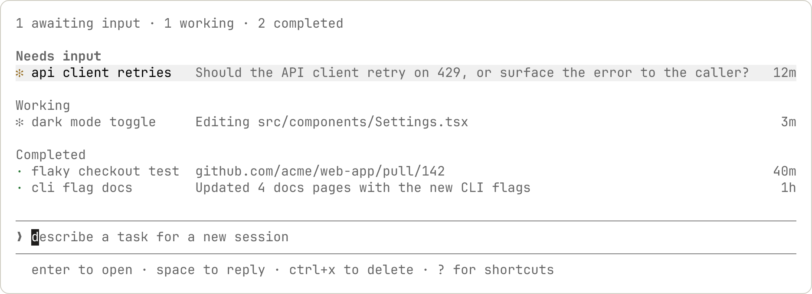

使用 agent view 管理多个代理
从一个屏幕调度和管理多个 Claude Code 会话。Agent view 显示每个会话正在做什么以及哪些会话需要你的输入。
Agent view 通过 claude agents 打开，是所有后台会话的一个屏幕：什么正在运行、什么需要你的输入、什么已完成。调度新会话，一目了然地查看它们的状态而不是滚动浏览记录，只在需要时才介入。每个后台会话都是一个完整的 Claude Code 对话，在没有终端连接的情况下继续运行，所以你可以随时打开它、回复并离开。

当你有多个独立任务 Claude 可以在不需要你观看每一步的情况下处理时，使用 agent view。调度一个 bug 修复、一个拉取请求审查和一个不稳定测试调查作为三行，在另一个窗口中继续工作，当一行显示它需要你或有结果时检查回来。
当你想在任何代理的会话中更直接地工作时，附加到该行以进入完整对话。
要比较 agent view 与 subagents、agent teams 和 worktrees，请参阅 并行运行代理。Agent view 在你的机器上运行会话，你调度每一个；要让 Claude 从一个对话中在云端启动和跟踪并行会话，请参阅 Projects。
Agent view 处于研究预览阶段。随着功能的发展，界面和快捷键可能会改变。
快速开始
本演练涵盖 agent view 的核心循环：调度一个任务，在 Claude 工作时观察其所在行的更新，窥视以查看进展并回复，以及附加以查看完整对话。您调度的会话在关闭 agent view 后会继续运行，因此您可以离开并稍后再回来。
1. 打开 agent view
在您的 shell 中运行：
claude agents
如果您尚未接受该目录的工作区信任对话框，Claude Code 会在 agent view 打开前显示该对话框，与 claude 显示的对话框相同。接受即可保存对该工作区的信任并继续。如果您拒绝，Claude Code 会直接退出，不会打开 agent view。
Agent view 打开后，底部有一个输入框，表格会随着会话启动而逐步填充。按 Esc 返回您的 shell；如果您是通过按 ← 将会话转入后台来打开 agent view 的，Esc 则会返回到该对话。您离开期间会话会继续运行，并会在您下次打开 agent view 时重新出现。
2. 调度一个会话
输入描述任务的提示词并按 Enter。一个新的后台会话会针对该任务启动，并显示为一行，标明它是正在工作、正在等待您，还是已完成。新会话使用 agent view 标题中显示的模型。它以哪种权限模式启动取决于您打开 agent view 的方式。
您在此输入的每个提示词都会启动各自的新会话。输入另一个提示词并按 Enter 会启动第二个会话，与第一个会话并行运行，而不是向第一个会话发送后续消息。您可以通过这种方式并行运行多个会话。
每个会话独立消耗您的订阅配额，因此在一次调度多个会话之前，请先查看限制。
3. 窥视和回复
使用箭头键选择一行，然后按 Space 打开窥视面板。它显示会话的最新输出或会话正在等待回答的问题，而不是完整的会话记录。输入回复并按 Enter 即可发送，无需离开 agent view。
4. 附加和分离
当您想查看完整对话时，在某一行上按 Enter 或 → 进行附加。该会话会接管终端，成为一个完整的交互式 Claude Code 会话。在空输入框中按 ← 即可分离并返回表格。
5. 引入现有会话
此步骤需要一个正在运行的会话。如果您按照前面的步骤操作，此终端中并没有打开的会话，因此请先在另一个终端中打开一个常规 claude 会话并向其发送一条消息。
要将已打开的会话移入 agent view，请在该会话中运行 /bg，或在空输入框中按 ←，一步完成将会话转入后台并打开 agent view。在尚无任何消息的新会话中，/bg 会要求您先发送一条消息，而 ← 可立即生效。该会话会继续运行，并与您调度的会话一起显示为一行。
在常规 claude 会话中，在空输入框中按 ← 会打开 agent view，页脚中的 ← 提示会报告您的后台会话情况：
- 提示：会话打开后的十秒内，页脚显示
← for agents。提示消失后，按←仍然有效 - 等待计数：当有后台会话等待您输入时，同一位置会统计其数量，例如
← 2 agents；当超过 99 个会话等待时显示← 99+ agents。终端处于焦点状态时，计数大约每十秒刷新一次，焦点返回时会立即刷新 - 完成计数：当后台会话成功完成且没有会话等待您输入时，页脚会短暂显示已完成的数量，例如两个会话完成时显示
← 2 done
等待计数增加或减少时，以及某个后台会话成功完成时，它会短暂改变颜色。如果您启用 prefersReducedMotion，则既不会看到颜色变化，也不会看到 done 计数。在屏幕阅读器模式下，← 提示及其计数会被隐藏。
默认打开 agent view
要让不带参数的 claude 打开 agent view 而不是新对话，请启用一项 /config 设置。
1. 启用设置
在常规 claude 会话中，运行 /config 并启用 Open agents view by default。要跳过菜单，可直接设置 defaultToAgentsView 键：
/config defaultToAgentsView=true
2. 启动 Claude Code
退出会话，然后不带参数运行 claude：
claude
此时将打开 agent view，而不是新对话。
要在启用该设置的情况下启动常规会话，请传入提示词：claude "fix the login test"。要关闭该设置，请在常规会话中或在从 agent view 附加的会话中运行 /config defaultToAgentsView=false。
使用 agent view 监控会话
运行 claude agents 打开 agent view。它接管整个终端并列出按状态分组的每个会话，固定的会话和需要您处理的会话位于顶部。每行显示会话的名称、当前活动和存在时长，时长从会话创建时开始计算；已完成会话的时长会定格在运行所花费的时间。
名称使用该会话中由 /color 设置的颜色着色，包括您用 ← 或 /background 将会话转入后台时。
默认情况下，列表显示您启动的每个后台会话，涵盖您的所有项目。在一个仓库中工作的会话和在另一个 worktree 中工作的会话都会出现在这里，无论您从哪个目录打开 agent view。要将列表限定到一个项目，请传递 --cwd：
claude agents --cwd ~/projects/my-app
这只显示在该目录下启动的会话。已移入 worktree（位于 ~/projects/my-app/.claude/worktrees/ 下）的会话仍会列出。
您在其他终端中打开的交互式会话不会出现，直到您将其转入后台。会话生成的子代理和队友不会作为单独的行列出。
Pinned
✽ clawd walk cycle Drawing the walk-cycle sprite frames 3m
Ready for review
∙ jump physics Opened PR with collision fix #2048 2h
Needs input
✻ power-up design double jump or wall climb? 1m
Working
✽ collision detection Adding swept-AABB checks to CollisionSystem 2m
✢ playtest level 3 all checkpoints cleared ×12 in 4m
Completed
✻ title screen menu, options, and credits done 9m
∙ sound effects 14 SFX exported to assets/audio 4h
… 6 more
读取会话状态
每行以一个图标开头，其颜色和动画显示会话的状态：
| 状态 | 图标显示为 | 含义 |
|---|---|---|
| 工作中 | 动画 | Claude 正在运行工具或生成回复 |
| 需要输入 | 黄色 | Claude 正在等待只有您能提供的内容：问题的答案、权限决定，或其他只有您能回答的提示，例如允许某个网络主机的沙箱提示，或 MCP 服务器的输入请求。需要已附加终端的命令，例如 /install-github-app 或 /mcp 设置列表，也会让无人值守的会话停留在这里 |
| 空闲 | 暗淡 | 会话没有任何事情要做，已准备好接收您的下一个提示词 |
| 已完成 | 绿色 | 任务成功完成 |
| 失败 | 红色 | 任务以错误结束 |
| 已停止 | 灰色 | 您用 Ctrl+X 或 claude stop 停止了会话，其进程从 Claude Code 外部被结束，或它在后台服务关闭时结束 |
另外，图标的形状有其自身的含义：
| 形状 | 含义 |
|---|---|
✻ 或动画 ✽ |
会话进程正在运行，或会话需要您的输入 |
∙ |
进程已退出。您仍然可以窥视该行，当您回复或附加时，Claude 会根据其保存的对话重新启动它 |
✢ |
一个 /loop 会话正在迭代之间休眠。该行显示其运行次数和倒计时 |
行右边缘可能出现的 #N 或 !N 标签是指向会话的拉取请求或合并请求的链接，不是状态图标的一部分。
agent view 打开时，终端标签页标题会显示等待输入的数量：有会话需要输入时显示 2 awaiting input · claude agents，没有时显示 claude agents。
要从脚本或其他程序读取会话状态，请使用 claude agents --json，而不是 ~/.claude/jobs/ 下的文件。
agent view 打开时，当本地后台会话开始需要您的输入、完成或失败时，Claude Code 还会通过您配置的终端通知频道发送通知。按计划运行的会话，例如 /loop 会话，仅在需要您的输入时通知。通知使用与 Claude Code 其余部分相同的 preferredNotifChannel 设置，并以 agent_needs_input 或 agent_completed 类型触发 Notification hook。
后台会话不需要打开任何终端即可继续工作。一个单独的监督进程运行它们，因此您可以关闭 agent view、关闭 shell 或启动新的交互式会话，已分派的工作会继续进行。
会话状态会在磁盘上持久保存，不受自动更新和监督进程重启的影响。机器休眠时会话也会被保留。它们的进程在唤醒时恢复，监督进程会重新连接到它们，而不是将这段时间间隔视为空闲。关机仍然会停止正在运行的会话；请参阅关机后会话显示为失败或已停止了解如何恢复它们。
如果机器休眠时会话正在生成回复，会话恢复后可能无响应。当您打开一个已停止响应的会话时，监督进程会重启其进程，会话会从中断处继续被打断的回复。
行摘要
每行中的单行摘要由 Haiku-class 模型生成，因此无需打开会话记录，该行就能告诉您会话正在做什么、需要什么或产出了什么。会话正在工作时，行文本最多每 15 秒根据会话自身的最近输出更新一次，不发送模型请求；每个轮次结束时，模型会写入新的摘要。
工作中的行显示会话自述正在做的事情，被阻塞的行显示它提出的问题。在较长的轮次中，模型还会每隔几分钟重写一次摘要，因此繁忙的行不会一直显示过时的摘要。摘要文本会填满行的剩余宽度；打开窥视面板可阅读被终端边缘截断的句子。
当列表按目录分组时，摘要以彩色文字显示的会话状态开头，例如 Needs input · double jump or wall climb?。在默认的按状态分组中，组标题已经指明了状态，因此行只显示摘要。
轮次结束时的摘要和每次轮次中途的重写，都是通过您的常规提供商发送的一个简短 Haiku-class 请求，按与会话本身相同的数据使用条款计费和处理。两次模型重写之间每 15 秒的更新复用会话自身的输出，不发送请求。在未配置 Haiku-class 模型的第三方提供商或网关上，请求改用会话的主模型；设置 ANTHROPIC_DEFAULT_HAIKU_MODEL 可选择一个模型。
拉取请求状态
当会话创建拉取请求时，Claude Code 会在行的右边缘添加一个链接到该拉取请求的标签：
- Claude Code 对拉取请求将标签写为
#1234，对 GitLab 合并请求写为!1234。 - 即使无法检测到超链接支持（例如通过 SSH 或 tmux），Claude Code 也会输出链接。设置
FORCE_HYPERLINK=0可将标签呈现为纯文本。 - 在您向会话发送后续消息后，Claude Code 会保留该标签，同时行恢复显示实时进度。
处理现有拉取请求的会话也会以相同方式链接到它。Claude Code 查找拉取请求的方式取决于 Claude 运行的命令：
- 当 Claude 使用
gh编辑、评论、关闭拉取请求或将其标记为就绪时，Claude Code 会链接该命令自身输出中指明的拉取请求。捕获的输出中未指明拉取请求的gh命令不会创建链接；gh pr merge是常见情况，因为它只将结果打印到交互式终端。 - 当 Claude 使用
gh pr checkout检出拉取请求或推送到分支时，Claude Code 会用gh pr view查找该分支，并链接其打开的拉取请求。 - Claude 推送时拉取请求不必已经存在：在同一目录中后续最多五个
git、gh、glab或curl命令运行后，Claude Code 会重试分支查找，因此在推送之后创建的拉取请求，包括 Claude 通过 GitHub REST API 创建的拉取请求，会在重试找到它时被链接。
当会话链接到多个拉取请求时，标签改为显示数量，例如 3 PRs，并按最需要关注的打开拉取请求着色。打开窥视面板可查看全部拉取请求。
拉取请求编号按其状态着色：
| 颜色 | 拉取请求状态 |
|---|---|
| 黄色 | 等待检查或审查，或检查失败 |
| 绿色 | 检查通过且没有审查阻止 |
| 紫色 | 已合并 |
| 灰色 | 草稿或已关闭 |
对于以拉取请求结束的任务，请查看此标签了解结果：当编号变为绿色时，审查并合并该拉取请求。
窥视和回复
在选中的行上按 Space 打开窥视面板。面板打开时会显示该行在终端边缘被截断的句子，具体是哪个句子取决于会话的状态：
- 正在等待您的会话：它提出的确切问题，显示在回复输入框上方
- 已完成的会话：其结果
- 工作中的会话：其完整的状态句子
接下来列出与该会话链接的所有拉取请求。对于正在等待您或以安全模式运行的会话，其下方还会多出一行：
- 类似
waiting 3m的行：会话已等待您多长时间。行右边缘的时长是另一个数字：它从会话启动时开始计算 safe mode · customizations are off：此会话在关闭您的自定义配置的情况下运行，因为您是从 shell 用claude --bg --safe-mode启动它的。您可以保持原样。要在重新启用自定义配置的情况下继续对话，请在 shell 中依次运行claude stop <id>和claude --resume
大多数时候窥视面板就足够了，您无需打开完整的会话记录。
在窥视面板中输入回复并按 Enter 将其发送到该会话。在回复前加上 ! 可改为发送 Bash 命令。回复的处理方式取决于会话以及您发送的内容：
- 正在工作的会话：
/model、/effort、/rename和/usage会立即运行。其他回复会加入会话的消息队列而不是打断回复，并在排队输入生效时生效。其他命令会等待当前轮次结束，即使是在会话自身的提示符处输入后会立即运行的命令 - 恰好为
/stop的回复：立即停止会话，而不是发送给会话，无论会话正在工作还是在等待您 - shell 作业：回复（包括
/stop）会作为键入的输入发送到该命令的终端
当会话正在等待您时，在窥视面板中如何回答取决于它在等待什么：
- 带有预定义选项的问题：面板按编号列出选项。在回复输入框为空时，按某个选项的编号将其填入，然后按
Enter发送，或者改为输入您自己的答案 - 没有预定义选项的问题：输入您的答案。当空输入框显示建议的回复时，按
Tab将其填入，并可在发送前编辑 - 权限提示或其他对话框，例如沙箱提示或 MCP 服务器的输入请求：回复并不会回答它。您的回复会在队列中等待。要回答该对话框，请用
→附加
当 PermissionRequest 或 PreToolUse hook 针对会话正在询问的调用返回了 Claude Code 无法验证的输出时，该行会在待处理请求的文本之前显示 hook 事件以及 hook output invalid: 和验证错误。对于以其他方式失败的 hook，该行会说明 hook 失败。会话仍在等待同一个请求。
当回复无法送达时，错误消息会说明它是否已保存。以 ! 或 / 开头的回复永远不会被保存。下次您重启会话时，Claude Code 会将已保存的回复作为会话的下一个提示词发送；其他回复请重新发送。
在按住模式下启用语音听写后，在回复输入框获得焦点时按住您的按键通话键，即可通过听写而非键入来回复。agent view 底部的分派输入框中也同样适用。
使用 ↑ 和 ↓ 窥视相邻会话而无需关闭面板，或按 → 附加。
附加到会话
在选中的行上按 Enter 或 → 即可附加。agent view 会被完整的交互式会话取代。附加时，Claude 会发布一段简短回顾，说明您离开期间发生了什么。
附加后，会话的行为与任何其他 Claude Code 会话相同：命令、快捷键和功能都可正常使用，但以下情况除外。
附加后，/install-github-app 和 /mcp 设置列表可正常使用，因为终端前有人可以完成它们的对话框。没有人附加时，这些命令无法打开对话框，因此会话会出现在 agent view 的 Needs input 下，行中显示类似 open this session to manage MCP servers 的内容，会话记录中的回复也会说明同样的情况。附加并再次运行该命令即可继续；附加时需要输入的行会被清除。/mcp reconnect <server>、/mcp enable 和 /mcp disable 无论是否附加都可使用。
附加的会话始终以全屏模式呈现，不受您的 tui 设置影响，因为后台会话没有可追加内容的终端回滚缓冲区。使用 PgUp、PgDn 或鼠标滚轮滚动，按 Ctrl+O 进入会话记录模式。终端的原生滚动和 tmux 复制模式仅显示当前视口，与运行任何全屏应用程序时相同。
附加的会话不会向您的终端报告其状态。
在空提示符上按 ← 或运行 /exit 即可分离并返回 agent view，无论您是从 agent view 打开会话，还是从 shell 用 claude attach <id> 打开的。
/btw overlay 打开时，← 也可以分离。需要 Claude Code v2.1.257 或更高版本。仍在回答中的旁支问题会在您离开期间继续运行。下次附加时，overlay 会重新打开并显示该问题或其答案。
在 Windows 上，如果您在附加后约半秒内按 ←，Claude Code 会显示 Ambiguous ←, press again to detach，因为在这段时间内终端可能会重新传递附加之前的按键。再按一次 ← 即可分离。
Ctrl+Z 也会分离，但会返回到您开始的地方：如果您从 agent view 附加则返回 agent view，如果您运行的是 claude attach 则返回 shell。当对话框获得焦点且不响应 ← 时，请使用 Ctrl+Z。
附加时 Ctrl+C 保持其标准中断行为：它会取消正在进行的回复或 ! shell 命令，而不是分离。在空提示符上按两次 Ctrl+C 会分离。
分离永远不会停止后台会话：←、Ctrl+Z、/exit 以及连按两次 Ctrl+C 或 Ctrl+D 都会让它继续运行。如果您在 /loop 等待下一次迭代时分离，循环会继续运行，该次迭代会在您不在时按计划开始。要在分离前停止循环，请参阅停止循环。要从会话内部结束会话，请运行 /stop。
在不离开终端的情况下切换会话
在前台运行的会话中（即您在终端中启动、而非从 agent view 附加的会话），在空提示符上按 ← 会将其转入后台并打开 agent view，同时选中该会话的行，因此您无需离开终端即可切换会话。对于已附加的会话，同样按一次即可分离。
如果您在删除提示符中最后的文本或浏览提示历史后立即按 ←，Claude Code 会要求您确认：第一次按下显示 Press ← again to open agents（在已附加的会话中显示 Press ← again to go back to agents），第二次按下才会切换。
当 ← 将前台会话转入后台时，agent view 会在列表上方显示 Your conversation moved to the background，并已选中该会话的行。接下来：
- 按
Enter重新打开对话。 - 按
Esc撤销切换并返回对话。如果Esc显示Still starting — try again in a moment，说明后台会话尚未就绪，请稍后再按一次Esc。 - 按两次
Ctrl+C退出到 shell。
当 Claude Code 无法重新打开对话时，它会退出并打印一条可恢复该对话的 claude --resume 命令。
Claude 的任务列表会随对话移到后台会话，因此当您返回该行时，清单保持完整。
在您用方向键或鼠标移动选择后，您按下 ← 时所在的行仍会保持粗体、不暗淡的名称，便于您辨认自己来自哪个会话。
如果按 ← 时有工具正在运行，Claude Code 会等待其完成后再转入后台，Claude 会在后台会话中继续回复。再按一次 ← 可立即转入后台而不等待。当进行中的后台工作无法转移到后台会话时，Claude Code 会先显示 Background this session? 对话框，与 /background 相同。
大约十秒后，Claude Code 会不再等待，直接将会话转入后台，但以下情况等除外：
- 前台子代理仍在运行：Claude Code 会继续等待，以便 Claude 启动的前台子代理的工作得以延续，并显示
Still backgrounding after the current tool。再次按←可不等待直接转入后台，这会使这些子代理从头重新开始。 - 有权限提示或问题在等待您的回答：当权限提示或 Claude 提出的问题处于等待状态时，Claude Code 会继续等待并显示
Still backgrounding after the current tool — a question is waiting for your answer.如果您的回答让当前轮次得以继续，例如在权限提示上选择 Yes，Claude Code 会在当前工具完成时将会话转入后台。 - 您在提示输入框中输入内容：Claude Code 会取消切换，因为未发送的文本会留在终端的输入框中，不会移到后台会话。它会显示
Backgrounding cancelled — you have unsent text in the input. Send it or clear it, then press ← again.Claude 会继续在前台工作。 - 您停止了当前轮次：Claude Code 会取消切换并显示
Backgrounding cancelled — the turn was stopped.例如，当您用Esc中断 Claude，在主对话的权限提示上不添加评论而选择 No，或在主对话中 Claude 提出的问题上按Esc时，当前轮次会停止。再按一次←即可将会话转入后台。 - 排队的消息无法移动：您在 Claude 工作时排队的消息会随对话移到后台会话。当其中某条消息无法移动时，会话会留在前台，Claude Code 会显示类似
Cannot open agents — 1 queued message can't move to the background. Press ← again once Claude has read it.的通知。
当 Claude Code 将会话转入后台时（无论是大约十秒后，还是在您再按一次 ← 之后），它会停止 Claude 仍在前台运行的 shell 命令。Claude Code 不会针对该命令显示 Background this session? 对话框。在后台会话中，Claude 没有该命令已启动的记录，因此 Claude 可能会再次运行该命令。要在会话移动时让该命令继续运行，请在 Claude Code 仍在等待时按 Ctrl+B 将其转为后台命令。
即使对话还没有任何消息，按 ← 也会创建该会话的行，因此 → 仍可返回该会话。
您可以在 /config 中通过 leftArrowOpensAgents 设置为前台会话关闭此快捷键。
会话移到后台时发送的提示词
如果您在会话移到后台的那一刻输入提示词或 ! shell 命令，它会被停止或保持未发送状态：
- 在对话关闭时发送：回复或命令会在对话关闭、agent view 打开时停止
- 此时仍在等待 hook：提示词不会被发送，屏幕上也不会有任何说明。这包括在
SessionStarthook 仍在运行时输入的提示词
在这两种情况下，您输入的文本都会保留在提示历史中。要再次发送，请打开已转入后台的会话，在其提示符处按 ↑ 找回该文本。
组织列表
agent view 对会话进行分组，使需要输入的会话位于顶部，Ready for review 和 Needs input 位于 Working 和 Completed 之上。这些组名与上面的状态并非一一对应：会话有需要审查或检查失败的打开拉取请求时会移到 Ready for review，而 Completed 会同时收纳已完成、失败和已停止的会话。
按 Ctrl+S 可改为按目录分组。您的选择会在多次运行之间保留。
在一个组内：
- 按
Ctrl+T将会话固定到顶部，并在空闲时保持其进程运行 - 按
Shift+↑或Shift+↓重新排序会话 - 按
Ctrl+R重命名会话 - 在组标题上按
Enter将其折叠，但过滤器处于活动状态时除外，此时所有组都保持展开 - 按
Ctrl+X停止会话，并在两秒内再按一次Ctrl+X将其从列表中删除，或按Esc关闭确认而不删除。即使停止尝试失败（例如因为后台服务没有响应），第二次按下也会删除会话。在这种情况下，确认状态会再保持两秒，删除操作会自行结束会话的进程
在组标题上按 Ctrl+X 会在确认后删除该组中的所有会话。除了删除会话会移除什么中所述的保留情况外，删除会将会话从列表中移除。Claude 为其创建的 worktree 会被移除、保留或留在原处，具体取决于您的删除方式以及 worktree 中的内容。对话会话记录保留在您的本地机器上，可通过 claude --resume 访问。
屏幕容纳不下的已完成会话会折叠成一行 … N more。Completed 组会填满活跃组之后剩余的垂直空间。在较矮的终端上，标题会压缩为单行摘要，以便正在工作或需要输入的会话保持可见。
恢复过往会话
要恢复会话，请在分派输入框中输入 /resume。此时会打开一个选择器，按从新到旧的顺序列出您打开 agent view 所在仓库的过往会话，包括您从列表中删除的会话。已有行的会话不会列出。按 Enter 将选中的会话作为后台会话恢复，使其以行的形式重新加入列表。
在以下情况下，/resume 会失败并显示 isn't available in agent view：
/resume指定了 id 或搜索词- 视图通过
--cwd限定了范围 - 视图以
--safe-mode启动 - 视图以
--permission-mode或--settings等标志打开
如果您在 /resume 后输入了任何内容，请去掉这些内容后重新输入。如果您使用了上述某个标志，请在 shell 中不带该标志运行 claude agents，然后单独输入 /resume。
过滤会话
在分派输入框开头输入以下过滤器之一，即可在输入时缩小列表范围：
| 过滤器 | 显示 |
|---|---|
a:<name> |
运行指定 Agent 的会话 |
s:<state> |
处于给定状态的会话，例如 s:working，或位于给定组标题下的会话，例如 s:ready 对应 Ready for review。s:blocked 列出所有正在等待您的会话 |
n:<text> |
名称或第一个提示词包含该文本的会话，例如 n:login。需要 Claude Code v2.1.287 或更高版本 |
o:<text> |
结果包含该文本的会话，例如 o:merged。单独的 o: 会列出所有已报告结果的会话 |
拉取请求或合并请求编号（例如 #1234）或其 URL |
正在处理该拉取请求或合并请求的会话 |
| 任何其他 URL | 第一个提示词包含该 URL 的会话 |
要组合过滤器，请以 a:、s:、n: 或 o: 开头，再添加更多过滤器，以空格分隔。列表会显示同时匹配所有过滤器的会话。例如，s:blocked a:reviewer 会列出正在等待您的 reviewer 会话。
过滤器处于活动状态时，您折叠的组会展开以显示匹配项，并且会选中一个匹配项，因此按 Enter 即可打开它。清空输入框即可移除过滤器，这些组会再次折叠。
快捷键
在 agent view 中按 ? 可在上下文中查看快捷键。下表对其进行了汇总。
| 快捷键 | 操作 |
|---|---|
↑ / ↓ |
在行之间移动 |
PgUp / PgDn |
按一屏的行数向上或向下移动 |
Home / End |
跳到第一行或最后一行 |
Enter |
附加到选定的会话；如果输入框中的文本不是过滤器，则提交该文本 |
Space |
打开或关闭选定会话的窥视面板 |
Shift+Enter |
在分派输入框中插入换行符，与主提示输入框相同 |
Ctrl+Enter |
分派并立即附加，适用于 ? overlay 中列出 ctrl+enter to start and open 的终端 |
→ |
附加到选定的会话 |
Alt+1..Alt+9 |
附加到焦点会话所在目录中的第 1–9 个会话 |
Tab |
输入框为空时，浏览所有子代理。否则应用突出显示的建议 |
Ctrl+S |
在按状态和按目录分组之间切换 |
Ctrl+T |
固定或取消固定选定的会话 |
Ctrl+F |
使用 n: 过滤器按名称查找会话 |
Alt+↑ / Alt+↓ |
跳到上一个或下一个组标题 |
Ctrl+R |
重命名选定的会话 |
Ctrl+G |
在您的 $VISUAL 或 $EDITOR 中打开分派提示词 |
Ctrl+J |
在分派输入框中插入换行符 |
Ctrl+X |
停止会话；在两秒内再按一次即可删除 |
Shift+↑ / Shift+↓ |
重新排序选定的会话 |
Esc |
关闭窥视面板、清空输入框或退出。当您通过用 ← 将会话转入后台而打开 agent view 时，最后一次 Esc 会返回该对话而不是退出。启用 vim 编辑器模式时，在输入框中按 Esc 会从 INSERT 模式切换到 NORMAL 模式并保留您的文本，与主提示输入框相同 |
Ctrl+C |
清空输入框；按两次退出。当屏幕上有选中的文本时，按下该键会改为清除选区；除非选中时已自动复制，否则会先复制选区 |
? |
显示快捷键 |
在 Agents 上下文中有对应操作的快捷键遵循您的 keybindings.json。Ctrl+G 也是如此，它通过 Chat 上下文的 chat:externalEditor 绑定进行配置。
分派新的 Agent
您可以从 Agent 视图分派新的后台会话，将现有的交互式会话发送或复制到后台，或直接从 shell 启动一个。
从 Agent 视图分派 Agent
在 Agent 视图底部的输入框中输入提示词，然后按 Enter 启动新的后台会话。会话会根据提示词自动命名；稍后可以使用 Ctrl+R 重命名。
自动名称是由 Haiku 级模型 生成的简短标签。会话稍后获得的名称也会显示在其行上，包括当您在该会话中 接受计划 时会话获得的 生成的标题。
将图像粘贴到提示词中，即可随任务附上屏幕截图或图表。
粘贴的文本超过 800 个字符或超过三行时会折叠为 [Pasted text #N] 占位符，以便输入保持在一行；完整文本在您分派时发送。要在分派前查看或编辑折叠的文本，请再次粘贴相同的文本，占位符会展开回输入框。
通过为提示词添加前缀或在其中提及特定内容来控制会话如何启动：
| 输入 | 效果 |
|---|---|
<agent-name> <prompt> |
如果第一个单词与自定义 子代理 名称匹配，该子代理将作为会话的主 Agent 运行，使用其 frontmatter 中的配置 |
@<agent-name> |
在提示词中的任何位置提及自定义子代理，以将其作为主 Agent 运行 |
@<repo> |
提及一个仓库以在该处运行会话。请参阅 分派到特定目录 了解会列出哪些仓库 |
/<command> |
建议可作为提示词分派的 skill 和 命令 |
! <command> |
将 shell 命令作为后台作业运行，而不是启动 Claude 会话。该作业显示为一行，您可以附加到它、观察它并从中分离 |
#<number> 或 Pull Request/merge request URL |
如果已有会话在处理该 Pull Request 或 merge request，Claude Code 会选中其行，而不是分派新会话 |
有一小组命令在 Agent 视图本身中运行，而不是分派：
/exit和/quit关闭 Agent 视图/logout将您注销/model、/effort和/fast设置 您接下来分派的会话启动时使用的配置。/effort和/fast需要 Claude Code v2.1.299 或更高版本。/login打开登录对话框，以便您无需附加到会话即可重新登录- 不带参数的
/resume或其别名/continue会打开该仓库过去会话的选择器，以将其中一个作为后台会话 恢复
Skill、您自己的命令以及会展开为提示词的内置命令（如 /init）会作为第一条提示词发送到新的后台会话。isn't available in agent view 提示表示您输入的内置命令没有运行。要运行它，请 附加到会话 并在其中输入。您输入的所有内容都会保留在该提示旁边的输入框中，以便您进行编辑。
将重复任务打包为 skill，即可从 Agent 视图反复启动相同的工作流，而无需重新输入提示词。
当同一个 @name 同时匹配子代理和同级仓库时，子代理优先。不带 @ 的第一个单词匹配同样适用，因此恰好以您某个子代理名称开头的提示词会分派该子代理，而不是将该单词视为纯文本。想要明确指定时请使用 @ 形式，或以其他单词开头来避免匹配。
分派到特定目录
新会话在您打开 Agent 视图的目录中运行。要指定其他目录，请使用以下任一方式：
- 在该目录中打开
claude agents。 -
在父目录中打开
claude agents，并在提示词中使用@<repo>提及子仓库。输入@会列出这些目标： -
启动目录下一级的 Git 仓库
- 您启动时所在仓库已注册的、位于其目录树内的 git worktree，例如 Claude 在
.claude/worktrees/下创建的 worktree，并标注其检出的分支。在仓库外添加的 worktree（例如使用git worktree add ../feature添加的）不会列出 - 列表中已有会话的任何目录
名称包含空格的目录不会列出。
* 从 shell 中 cd 进入该目录并运行 claude --bg "<prompt>"。
当 Agent 视图按目录分组时，分派会将提示词发送到所选行的目录，因此您可以选择一个分组并分派到其中，而无需重新输入路径。
将会话发送或复制到后台
有两个命令可将工作从您所在的会话移到后台：/background 将当前对话发送到后台并释放您的终端，/fork 则发送一个副本，同时您继续在原处工作。
将会话发送到后台
运行 /background 或其别名 /bg 将当前对话移到后台会话。传递一个提示词，例如 /bg run the test suite and fix any failures，可以先再给出一条指令。如果您运行 /bg 时 Claude 正在回复，回复会在后台会话中继续。
退出仍有后台工作运行的会话（例如子代理、后台 shell 命令、工作流或 monitor）时，会显示 Background work is running 对话框，而不是立即退出。选择 Move to background and exit 可以像 /background 一样将会话移到后台并返回到您的 shell。当 Agent 视图 已关闭 时不显示该选项。
如果列表上的后台会话已使用该对话的名称，Claude Code 会为新行的名称编号，例如 my-session (2)，并保持现有行的名称不变。要重命名新行，请在 Agent 视图中选择它并按 Ctrl+R。
使用 /fork 复制会话
运行 /fork 将当前对话复制到新的后台会话，同时原始会话继续运行。副本包含截至该时刻对话中的所有内容；副本运行的位置请参阅下面的列表。它还会继承模型、权限模式、effort 级别，以及您在会话期间添加的任何目录或"不再询问"权限授予。副本在 Agent 视图中显示为独立的一行。
fork 之后，两个对话彼此独立：副本所做的任何事情都不会自行进入原始对话，不过在启用了 跨会话消息 的会话中，任一会话的 Claude 都可以显式地向另一个发送消息。
当 Agent 视图已关闭 时，/fork 会启动一个 fork 出的子代理，而不是复制会话。
向副本发送提示词并打开其会话
传递一个提示词，例如 /fork open a draft pull request with the work so far，副本会立即开始处理。不带提示词时，副本会等待第一条指令：在 claude agents 中选择其行并按 Space 发送一条，或运行 claude attach <id>。等待期间，所选行会显示 space to send it a prompt。
/fork 的确认信息只有一行，显示副本的状态（例如 session running）、其在 Agent 视图中的行名称，以及用于 claude attach 的会话 ID。单击名称即可切换到副本：此会话会移到后台（与按 ← 相同），Agent 视图随即打开副本的会话。
副本运行的位置
除非副本 就地编辑，Claude Code 会指示它在进行代码更改前创建自己的 worktree。在 git 仓库外，只有从 hook 创建的 worktree 移出的副本才会获得该指令；没有 WorktreeCreate hook 时，副本就地编辑。无论隔离设置如何，从您的 worktree 移出的副本还会被告知绝不要编辑该 worktree、在其中运行命令或进入该 worktree。
副本启动的位置取决于当前会话运行的位置：
- 与任何分派的会话一样，副本会 在编辑文件前移入自己的 worktree。这种情况下，确认信息不会提及副本运行的位置。
- 当您的会话在启动后移入其链接的 worktree 时，副本会回到会话移动前的位置启动，并且除非它 就地编辑，否则会在那里自己的 worktree 中进行代码更改。当您的 worktree 检出在某个分支上时，该指令还会告诉任务建立在您工作之上的副本将其新分支基于您的分支，因为您的分支仍检出在您的 worktree 中。确认信息以
runs in the origin tree结尾。 - 当您在拥有主工作树的仓库的链接 worktree 内启动会话时，副本会在该主工作树中启动，同样遵循使用自己 worktree 的规则，但没有分支指令。此时确认信息同样以
runs in the origin tree结尾。 - 在裸仓库布局的 worktree 内启动的会话没有可返回的主工作树，因此副本留在原处，确认信息以
edits this checkout结尾。当在不位于链接 worktree 内的会话中 关闭了 worktree 隔离时，也会出现相同的说明，因为此时副本会编辑您打开的文件。
无法 fork 的会话
使用副本无法继承的启动标志（例如替换的系统提示词或 --tools 允许列表）启动的会话无法 fork；Claude Code 会说明这一点，而不是创建不完整的副本。从 Agent 视图分派的会话可以正常 fork：副本会使用与来源会话相同的 Agent 定义 和附加指令启动。
后台处理时的继承内容
当您将会话转入后台时，每种进行中的后台工作要么继承到后台会话，要么仅在 Claude 于那里重新启动它时才继续，要么停止：
- 继承：正在运行的后台 shell 命令、已转入后台的子代理、您使用
/loop创建的定时任务，以及 Claude 对 Artifact 评论的自动回复 会在后台会话中继续运行。子代理会与其启动的所有内容一起移动，因此只有当所有这些工作也都能移动时它才会被继承。 - 仅在 Claude 重新启动时继续：正在运行的 动态工作流。如果您查看后台会话时该工作流尚未继续，请 让 Claude 重新启动它。
- 停止：无法移到后台会话的工作，例如正在运行的 monitor。当有任何此类工作正在运行时，Claude Code 会显示
Background this session?对话框，以便您在它停止工作前确认。拥有 monitor 的已转入后台的子代理会随 monitor 一起停止。
进入后台后，会话可以启动新的子代理、monitor 和后台命令，这些在之后的分离和重新附加过程中会持续运行。
原始启动时的配置标志会传递到后台会话，因此其 MCP 服务器、设置和备用模型保持有效：
--mcp-config和--strict-mcp-config--settings--setting-sources--add-dir--plugin-dir--fallback-model--allow-dangerously-skip-permissions
您在会话期间使用 /add-dir 添加的目录也会继承。继承 --allow-dangerously-skip-permissions 会使 bypassPermissions 在后台会话中保持可用，但不会授予任何新权限：该模式仍需要有您 接受绕过免责声明 的记录。
后台处理时的动态工作流
如果 动态工作流 在您将其会话转入后台后没有继续，请让 Claude 重新启动该工作流。只有当 Claude 在后台会话中重新启动它时，该运行才会继续，并且 Claude Code 可能会先请您批准该重新启动。会话的对话中会显示一条通知，说明该工作流 could not be resumed。
当 Claude 重新启动工作流时，在您将会话转入后台时仍在运行的任何子代理都会从头开始，并再次消耗其 token。如果您在仍有子代理运行时按 ← 或运行 /background，Background this session? 对话框会说明有多少个。要让它们先完成，请选择 Stay。
从您的 shell 分派 Agent
传递 --bg 或其长形式 --background 可启动直接进入后台的会话：
claude --bg "investigate the flaky SettingsChangeDetector test"
提示词是位置参数，而不是 -p 的值。Claude Code 会在创建任何会话前拒绝 --bg 与 -p 或 --print 的组合，因为 --print 永远不会启动 claude agents 所附加的交互式会话。
如果您在未 信任 的目录中从终端运行 claude --bg，会先出现工作区信任对话框，会话在您接受后启动。如果您拒绝，Claude Code 会退出而不启动会话。在无法显示对话框的环境中（例如脚本中），命令会以 Workspace not trusted 错误退出。
要将您定义的特定 子代理（例如 code-reviewer）作为会话的主 Agent 运行，请将 --bg 与 --agent 组合使用：
claude --agent code-reviewer --bg "address review comments on PR 1234"
如果名称与您的任何子代理都不匹配，启动会失败：Claude Code 会打印 no agent named 警告，并仍报告会话已转入后台，但会话会立即以 --agent '<name>' not found 错误退出。
当后台会话之后恢复或重新启动时，Claude Code 会恢复该 Agent 及其工具限制；关于其系统提示词，请参阅 恢复的对话中的系统提示词标志。它会先在会话自己的目录中搜索该 Agent（前提是您已 信任该工作区），因此从其他目录恢复会话时，项目范围的 Agent 仍会加载。如果该 Agent 已不存在，会话会使用默认工具继续运行，其会话记录打开时会带有一条 指明该 Agent 的警告。
要在后台继续现有对话，请使用 --resume 传递其完整会话 ID：
claude --resume 1f0e2c9a-6d0b-4c11-9f39-2a77c1d4e8b5 --bg "pick up where you left off and finish the migration"
在 Claude Code v2.1.257 或更高版本上，Claude Code 要么以相同 ID 继续该会话，要么以新 ID 启动一个副本并打印 note: 行，说明为何无法就地继续。当会话就地继续时，claude agents 只为其显示一行。
当您将 --bg 与 --continue、不带参数的 --resume 或带名称或文件路径的 --resume 组合使用时，Claude Code 总是会启动这样的副本。添加 --fork-session 可有意启动副本，且不显示该说明。
传递 --name 可在 Agent 视图中设置会话的显示名称，而不使用自动生成的名称：
claude --bg --name "flaky-test-fix" "investigate the flaky SettingsChangeDetector test"
转入后台后，Claude 会打印会话的短 ID 和用于管理它的命令。当托管后台会话的服务尚未运行时，--bg 可能会先在此输出上方打印 Starting background service…。当您传递 --name 时，名称会显示在短 ID 之后：
backgrounded · 7c5dcf5d · flaky-test-fix
claude agents list sessions
claude attach 7c5dcf5d open in this terminal
claude logs 7c5dcf5d show recent output
claude stop 7c5dcf5d stop this session
包含 --bg 的提示词
提及 --bg 或 --background 的提示词会按输入原样传递，您发送给后台会话的 --bg 回复也是如此。例如，以下命令会启动一个后台会话，第二个 --bg 是其提示词的一部分：
claude --bg "find out why --bg sessions are slow to start on this machine"
Claude Code 仅在可以出现标志的位置将整个参数读取为该标志：位于任何单独的 -- 分隔符之前，且不在另一个标志期望其值的位置。请将该标志放在最前面，如 claude --bg "<prompt>"。
在位置存在歧义的情况下（例如在一串组合的短标志之后），Claude Code 不会启动任何内容，而是以 Couldn't tell whether --bg is a flag or text here 错误退出。
运行 shell 命令
要将 shell 命令作为后台作业而不是 Claude 会话运行，请传递 --exec。以下示例将 pytest -x 作为后台作业运行：
claude --bg --exec 'pytest -x'
在 Agent 视图中，将 ! 作为分派输入的第一个字符即可分派同类作业：! 显示为前缀，其后的所有内容为命令，按 Enter 启动作业。
该命令作为基于 PTY 的作业运行，并在 Agent 视图中显示为一行，以最近一行输出作为其状态。shell 作业以命令代替 Claude 运行，因此不会调用任何模型，输出也不会发送到任何会话。
要查看输出，请附加到该行、按 Space 在不附加的情况下预览，或从您的 shell 运行 claude logs <id>。捕获的输出保存在内存中，不会写入磁盘。该行及其输出会在命令退出约五分钟后自动清理，因此如果您需要结果，请在此之前读取。
文件编辑如何隔离
当您从 Agent 视图分派后台会话或使用 claude --bg 启动一个后台会话时，会话在您的工作目录中启动。在编辑文件前，Claude 会将会话移入 .claude/worktrees/ 下的隔离 git worktree 中，因此并行会话可以读取同一个检出，但各自写入自己的 worktree。一旦会话进入其 worktree，Claude Code 就会为该会话及其生成的任何子代理 强制执行 worktree 隔离。
Claude 在以下情况下跳过 worktree：
- 您使用
←或/background将已打开的会话移到后台。该会话会继续在其原本工作的位置编辑文件 - 会话已位于链接的 git worktree 内，无论该 worktree 是 Claude 在
.claude/worktrees/下创建的，还是您使用git worktree add在其他位置创建的 - Claude 正在编辑的文件位于链接的 git worktree 内，例如会话或其子代理使用
git worktree add创建的 worktree - 工作目录不是 git 仓库，且没有配置
WorktreeCreatehook - 写入位置在工作目录之外
要为不适合使用 git worktree 的仓库关闭 worktree 隔离，请将 worktree.bgIsolation 设置为 "none"。后台会话随后会直接编辑您的工作副本，而不会先移入 worktree。将该设置添加到项目的 .claude/settings.json：
{
"worktree": {
"bgIsolation": "none"
}
}
在 git 仓库外，会话直接写入工作目录，彼此之间不隔离，因此请避免分派会编辑相同文件的并行会话。如果您使用其他版本控制系统，请配置 WorktreeCreate hook，Claude 会以与 git 相同的方式隔离编辑。
当 hook 在非 git 仓库的目录中失败时，Claude 会跳过该目录的隔离，并就地编辑工作目录。在 git 仓库内，Claude 在编辑前会将其移入 worktree 的会话，在该移动完成之前无法对共享检出使用 Edit、Write 或 NotebookEdit 工具。
要查找会话的 worktree 路径，请附加到会话并查看其工作目录。
后台会话生成的 子代理 会继承会话的工作目录。一旦会话进入 worktree，子代理的文件编辑就会落在该 worktree 中，而不是您的工作副本中。要改为给子代理分配单独的 worktree，请在其 frontmatter 中设置 isolation: worktree，或在生成它时传递 isolation: "worktree"。
当后台会话在 Claude 进入的 worktree 中进行了代码更改时，Claude Code 会指示 Claude 在完成前保存这些工作，这样即使您删除会话及其 worktree，工作也不会丢失：
- 提交并推送：Claude 无需询问即可提交，并在仓库有远程时推送分支。
- 草稿 Pull Request：Claude 会在任务需要时打开一个，该行上会显示
#N标签。 - 绝不：推送到
main或master、强制推送以及合并。 - 您的 git 指令优先：如果任务、
CLAUDE.md或 记忆 表明由您自己处理提交或推送，Claude 会将 git 操作留给您。
编辑并非由其自身隔离的检出的会话，在提交或切换分支前仍会询问。这适用于隔离设置为 "none"、worktree 移动失败，或会话在已存在的 worktree 内启动的情况。
无论任务是什么，Claude 都会以一份报告结束作业，说明它做了什么以及工作成果在哪里：路径、分支、Pull Request 或答案本身。
删除会话会移除什么
在 Agent 视图 中按两次 Ctrl+X，或使用 claude rm 删除会话。除下述保留的情况外，会话会从列表中移除。其会话记录仍保留在您的机器上，可通过 claude --resume 访问，且该移除在主管进程重新启动后依然有效。
Claude 为会话创建的 worktree 会如何处理：
- Agent 视图会移除它，包括未提交的更改，因此请先提交您想保留的内容。
- 当它有未提交的更改时，
claude rm会保留它以及会话行。 - Agent 视图和
claude rm都不会移除另一个正在运行的会话正在使用或已锁定的 worktree，再次删除也不会改变这一点。Claude Code 会保留 worktree 和会话，并指明保留的目录及原因；在 Agent 视图中，该会话的行会显示not deleted。请关闭另一个会话，然后再次删除。 - 当您删除的会话的 worktree 中有 Claude Code 无法确认已保存到其他位置的提交时，Claude Code 会保留 worktree 和会话，消息会指明 worktree 的分支以及有多少未推送的提交。消息还提供两种后续做法：推送这些提交，或再次删除以丢弃它们。
远程上的提交不会阻止删除。您的 origin 远程默认分支的本地副本上的提交也不会阻止删除，前提是该分支检出在您的主检出中（即仓库目录本身，而不是 worktree）。
在该拒绝之后，您可以选择：
- 要保留这些提交，请推送它们，或将它们合并到该默认分支，然后再次删除会话。
- 要丢弃它们，请不推送而直接再次删除会话：在 Agent 视图中该会话的行上按两次
Ctrl+X，或运行拒绝消息中打印的claude rm <id> --discard-unpushed命令。这会移除会话和 worktree 及其分支，丢弃未推送的提交和任何未提交的更改。
当您再次删除时，Claude Code 只会丢弃拒绝消息中显示的内容：如果此后 worktree 又有了新的提交，Claude Code 会再次保留它并显示更新后的状态。
当另一个已完成会话的记录也指向该 worktree 时，再次删除时它仍会被保留；请推送这些提交，然后再次删除。
* git 已不再识别的 worktree（例如在执行 git worktree prune 之后）不会阻止删除。Claude Code 会删除会话，并将目录留在磁盘上。
* 当 git 或您的 WorktreeRemove hook 未能移除 worktree 时，Claude Code 会保留 worktree 和会话，消息会指明原因。对于 hook，消息会说明它是如何结束的（例如 exited 1），并引用其 stderr 的开头部分。消息还会告诉您接下来执行以下哪项操作：
-
再次删除会话以强制移除目录：在 Agent 视图中该会话的行上按两次
Ctrl+X，或运行claude rm拒绝消息中打印的claude rm <id> --force-remove-worktree <worktree-id>命令。worktree 的分支会保留在仓库中。只有当 Claude Code 能确认以下所有条件时才会提供此选项：
- 该目录是仓库在
.claude/worktrees/下的链接 worktree 之一 - worktree 及其已检出的子模块都没有对已跟踪文件的未提交更改
- 没有其他会话的记录指向它
当 Claude Code 无法验证子模块检出的状态时（例如该子模块被一个单独的 git 仓库替换），也不会提供此选项。
* 解决阻碍因素，例如提交或储藏未提交的更改、将单独的 git 仓库移出 worktree、关闭正在使用该目录的程序或修复 hook，然后再次删除会话。
* 自行移除该目录，然后再次删除会话。 - 该目录是仓库在
您自己创建并在其中启动会话的 worktree 在任何情况下都会保留。
如果会话的 worktree 目录不属于任何 git 仓库（因为仓库已被删除，或 WorktreeCreate hook 在其他位置创建了该目录），该会话仍然可以删除。当目录中仍有文件时：
- Agent 视图在丢弃这些文件前会要求同样按两次
Ctrl+X。对于由 hook 创建的目录，它会改为运行您的WorktreeRemovehook；如果没有该 hook，它会拒绝删除并保留会话。 claude rm会保留会话和 worktree，并指明原因。
两种方式都会保留另一个已完成会话的记录所指向的目录。
设置模型、effort 和快速模式
在 Agent 视图中，在 分派输入框 中输入 /model、/effort 或 /fast 并按 Enter，之后您分派的会话就会以您设置的内容启动。您的选择仅保留在该 Agent 视图窗口中，不会保存到设置文件。/effort 和 /fast 需要 Claude Code v2.1.299 或更高版本，不带任何内容输入的 /model 也是如此。
在命令后给出值，或仅输入命令以从列表中选择：
- 模型：
/model <name>，例如/model opus - Effort 级别：
/effort加low、medium、high、xhigh或max，例如/effort high。要以 ultracode 启动会话，请改为从 shell 使用claude agents --effort ultracode打开 Agent 视图；分派输入框不接受/effort ultracode - 快速模式：
/fast on或/fast off。只有当快速模式 对您可用 且会话的模型支持快速模式时，会话才会以快速模式启动。在不支持快速模式的模型上，会话会以关闭快速模式的状态启动，因此请先使用/model选择一个 支持快速模式的模型。新会话是否启用快速模式，以输入框下方的提示为准，而不是标题栏。
要撤销某个选择，请将 default 作为值，例如 /effort default。
以下示例在 Opus 上分派一个会话，在 Sonnet 上分派下一个：
/model opus
refactor auth
/model sonnet
run the test suite
每个后台会话可以在不同的模型上运行。要为单个会话覆盖模型：
- 从 shell 中使用
claude --bg时传递--model。 - 附加到正在运行的会话并运行
/model进行切换。在选择器中选择，或输入/model <name>，都会保存为新会话的默认值，除非您在选择器中按s进行仅限当前会话的切换。仅限当前会话的切换在会话重新生成后依然有效。 - 通过以子代理名称开头或提及
@name，分派一个在 frontmatter 中设置了model的 子代理。当分派输入框中的/model选择生效时，不会使用该子代理的model，因此请在那里输入/model default。如果您使用claude agents --model启动，同样不会使用该子代理的模型，因此请在 shell 中不带--model运行claude agents。
权限模式、模型和 effort
后台会话会根据您分派它的位置和方式获取其设置、提供商、权限模式、模型和 effort。下面的小节介绍每个来源，以及主管进程重新启动会话时哪些内容会保留。
设置和提供商
后台会话从其运行的目录读取 设置，就像您在该目录中使用 它继承的配置标志 启动 claude 一样。这包括项目设置中的 env 值，因此在那里设置的 ANTHROPIC_MODEL 或提供商变量适用于该目录中的每个后台会话。
后台会话还会使用您分派它时所在 shell 的 PATH 运行，因此它运行的命令能找到与您终端相同的工具。它也会保留该 shell 的云提供商选择（例如 CLAUDE_CODE_USE_BEDROCK 或 CLAUDE_CODE_USE_VERTEX），以及其 ANTHROPIC_DEFAULT_*_MODEL 别名和您在那里导出的任何 CLAUDE_CODE_EXTRA_BODY 覆盖。
LLM 网关
如果您通过 LLM 网关 路由 Claude Code，请将网关变量放在设置文件的 env 块中，而不是在 shell 中导出，这样后台会话会随其余设置一起读取它们。在设置文件中设置 展示了该块以及凭据应使用哪个设置文件。
如果您改为仅在 shell 中导出网关 ANTHROPIC_BASE_URL，那么它连同您一起导出的 ANTHROPIC_CUSTOM_HEADERS 和凭据，只有在 主管进程 本身是从导出了相同网关的 shell 启动时才会传递到后台会话，并且仅限以下情况：
- 您使用
←或/background将自己的会话转入后台 - 您将会话分派到您当前所在的目录
- 您通过附加或回复来唤醒当前所在目录中已停止的会话
- 您使用
claude respawn重新启动当前所在目录中的会话
Claude Code 会转发位于云提供商前面的网关。如果您分派时所在的 shell 选择了该提供商，并导出了其网关端点及其身份验证绕过标志，Claude Code 会在适用于 ANTHROPIC_BASE_URL 的条件下，将该端点与标志组合连同 ANTHROPIC_CUSTOM_HEADERS 一起转发给会话。例如，导出 CLAUDE_CODE_USE_VERTEX=1 以及 ANTHROPIC_VERTEX_BASE_URL 和 CLAUDE_CODE_SKIP_VERTEX_AUTH=1，Claude Code 就会转发该端点和标志。
Claude Code 仅将转发的网关应用于该会话正在运行的进程，绝不会将其写入磁盘。
权限模式
- 使用
/bg或←转入后台：Claude Code 保留会话原有的 权限模式，因此您已切换到acceptEdits或auto的会话在分离后仍保持该模式 - 从在 shell 中启动的
claude agents分派，或使用claude --bg分派：新会话的启动方式与在该目录中启动新的claude会话相同，除非您是从使用 分派默认值 打开的 Agent 视图分派的。会话以哪种权限模式启动 列出了优先顺序
对于您从使用 ← 打开的 Agent 视图分派的会话，Claude Code 会从以下第一个适用的来源获取权限模式：
- 目标目录的
permissions.defaultMode。auto和bypassPermissions仅在来自托管设置、--settings文件或~/.claude/settings.json时生效。如果项目的.claude/settings.json或.claude/settings.local.json中的defaultMode选择了比您来源会话更宽松的模式，Claude Code 会拒绝它。 - 您来源会话的权限模式。
如果该会话处于 bypassPermissions 模式，新会话可能会改为以手动模式启动，并显示通知 Bypass permissions was requested at launch and ignored。当您对绕过免责声明的接受记录仅存在于 .claude/settings.local.json 或 --settings 文件中时，就会发生这种情况。您可以继续使用手动模式，或 将该接受记录添加到 ~/.claude/settings.json。
当 Claude Code 因某个来源的模式过于宽松而拒绝它时，由列表中的下一个来源决定。例如，如果您从计划模式会话分派到一个其已签入设置要求 acceptEdits 的目录，新会话会以计划模式启动。如果您将该 defaultMode 移到 ~/.claude/settings.json，则无论您来源会话的权限模式如何，它都会生效。
宽松程度从低到高依次为：计划模式，然后是手动和 dontAsk，然后是 acceptEdits 和 auto（二者均视为比对方更宽松），最后是 bypassPermissions。
分派默认值
要为从 Agent 视图分派的每个会话设置默认值，请在打开 Agent 视图时传递 --permission-mode、--model、--effort 或 --agent 中的任意一个：
claude agents --permission-mode plan --model opus --effort high
此处的 --effort 接受与 顶层 --effort 标志 相同的值，包括 ultracode。
--agent 设置分派提示词未指定子代理（无论是通过 @name 还是作为第一个单词）时使用的 子代理。如果设置了 agent 设置，则默认使用该设置，否则使用内置的通用 claude Agent。在分派输入中指定子代理会覆盖两者。
claude agents 还接受 --dangerously-skip-permissions 作为 --permission-mode bypassPermissions 的简写，以及 --allow-dangerously-skip-permissions，使 bypassPermissions 在每个分派会话的 Shift+Tab 循环中可用，而不以该模式启动。两者都与 顶层 CLI 标志 一致。
传递 --restricted 可使您从该视图分派的每个会话都以 受限模式 启动，如同每个会话都使用顶层 --restricted 标志启动一样。需要 Claude Code v2.1.248 或更高版本。
当前生效的默认值会显示在分派输入框下方的页脚中。
以 bypassPermissions 模式启动的后台会话需要有您 接受绕过免责声明 的记录，因为该模式允许一个您未在观察的会话无需批准即可执行操作。如果您之前未接受过，将 --dangerously-skip-permissions 或 --permission-mode bypassPermissions 传递给 claude agents 会显示相同的免责声明，接受后会将 bypassPermissions 应用于您从该视图启动的会话。传递 --allow-dangerously-skip-permissions 同样会显示该免责声明，接受后会使 bypassPermissions 在这些会话的 Shift+Tab 循环中可用，但不会以该模式启动它们。
重新启动后保留的内容
您为后台会话选择的权限模式、模型和 effort，以及 它继承的配置标志，在主管进程之后 停止并重新启动 其进程时都会保留。您在会话中途使用 /model 或 /effort 更改的模型或 effort 也会保留。
如果会话的 effort 来自您的设置，而不是 --effort 或 /effort，Claude Code 每次为该会话启动进程时都会重新读取您的设置。在您编辑 settings.json 中保存的 effort 后，更改会作用于您使用 ← 或 /bg 转入后台的会话及其之后的重新启动。保存的 effort 是 effortLevel 键或 modelSettings 条目。
Claude Code 还会在重新启动后保留您使用 /rename 或 Ctrl+R 设置的名称，因此您仍可以运行 claude --resume <name> 来访问该会话。
您在附加状态下使用 Ctrl+S 暂存的提示词也会随会话保留。在会话进程停止或重新启动后重新打开会话，按 Ctrl+S 即可恢复暂存的文本。暂存内容中的粘贴内容在重新启动后不会保留。
设置、插件和 MCP 服务器
Agent 视图接受与 claude 相同的配置标志，用于加载设置、插件、MCP 服务器和附加目录。Agent 视图会将 --settings、--setting-sources 和 --plugin-dir 应用于自身，并将每个配置标志传递给您从中分派的会话，因此以这种方式加载的插件或 MCP 服务器在这些会话中可用。
| 标志 | 效果 |
|---|---|
--settings <file-or-json> |
覆盖 Agent 视图和分派会话的设置 |
--setting-sources <sources> |
在 Agent 视图和分派会话中仅加载指定的设置来源 |
--add-dir <path> |
授予对附加目录的文件访问权限 |
--plugin-dir <path> |
从本地目录加载插件 |
--mcp-config <file-or-json> |
从配置文件或 JSON 字符串加载 MCP 服务器 |
--strict-mcp-config |
仅使用来自 --mcp-config 的 MCP 服务器，忽略其他 MCP 配置。请参阅 使用 managed-mcp.json 进行独占控制 了解该标志在托管 MCP 文件下的作用 |
每个值需重复一次 --add-dir、--plugin-dir 或 --mcp-config。claude agents 不支持空格分隔的形式，例如 --add-dir a b c。
您可以将 --settings、--setting-sources 和 --plugin-dir 放在 agents 之前或之后。请将 --add-dir 和 --mcp-config 放在 agents 之后：如果将其中任一个放在 agents 之前，claude agents --json 会因 unknown option 错误而失败。
以下示例使用设置覆盖和一个额外目录打开 Agent 视图：
claude agents --settings ./ci-settings.json --add-dir ../shared-lib
--settings 接受文件路径或内联 JSON 字符串。文件路径必须指向已存在的文件；如果文件不存在，Claude Code 会以 Settings file not found 错误退出。
从 shell 管理会话
每个后台会话有一个短 ID，您可以从 shell 使用。当您使用 claude --bg 启动会话时会打印该 ID，每个会话的 ID 是其在 ~/.claude/jobs/ 下的目录名。这些命令对于脚本编写或当您不想打开 agent view 时很有用。
| 命令 | 目的 |
|---|---|
claude agents |
打开 agent view |
claude agents --cwd <path> |
打开 agent view，范围限定为在 <path> 下启动的会话 |
claude agents --json |
将会话打印为 JSON 数组并退出。参见 将会话列为 JSON |
claude attach <id\|name> |
在此终端附加到会话 |
claude logs <id\|name> |
打印会话的最近输出 |
claude stop <id> |
停止会话。也接受 claude kill |
claude respawn <id> |
重新启动会话，运行中或已停止，例如用于获取更新的 Claude Code 二进制文件。具有已保存对话的会话会恢复该对话 |
claude respawn --all |
重新启动每个运行中的会话，例如一次性将所有会话移至更新的 Claude Code 二进制文件 |
claude rm <id> |
从列表中删除会话，以及 Claude 为其创建的 worktree（当安全删除时）；参见 删除会话会删除什么。会话记录保存在您的本地机器上，并且仍然可以通过 claude --resume 访问 |
claude rm <id> --discard-unpushed <commit>@<worktree-id> |
删除因未推送提交而删除被拒绝的会话，丢弃 worktree 及其分支和提交。传递拒绝打印的确切值；参见 删除会话会删除什么。需要 v2.1.260 或更高版本 |
claude rm <id> --force-remove-worktree <worktree-id> |
删除因 git 或 WorktreeRemove hook 无法删除其 worktree 而删除被拒绝的会话，无论如何删除 worktree 目录并在仓库中保留其分支。传递拒绝打印的确切值；参见 删除会话会删除什么。需要 v2.1.268 或更高版本 |
claude daemon status |
打印 supervisor 的状态、版本、socket 目录和 worker 数量 |
claude daemon logs |
跟踪 supervisor 的日志文件 ~/.claude/daemon.log，在新行到达时将其打印出来，直到您按下 Ctrl+C |
claude daemon stop --any |
停止 supervisor 进程及其托管的后台会话。传递 --keep-workers 以保持后台会话运行，以便下一个 supervisor 重新连接到它们。下一个 claude agents 或 claude --bg 启动一个新的 supervisor |
claude attach 和 claude logs 可以使用会话名称的一部分代替 ID，例如 claude logs "auth refactor"。claude attach 仅在会话进程运行时才能按名称打开会话，因此要重新启动已停止的会话，请改为传递 ID。传递名称需要 Claude Code v2.1.290 或更高版本。
将会话列为 JSON
claude agents --json 将活跃会话打印为 JSON 数组并退出：每个活跃会话，加上仍在工作或被阻止的后台会话，即使其进程已退出。添加 --all 以也包括已完成的后台会话，添加 --cwd <path> 以将列表限制为在该目录下启动的会话。
每个条目描述一个会话：
| 字段 | 出现时机 | 描述 |
|---|---|---|
cwd、kind、startedAt |
总是 | 工作目录、interactive 或 background，以及 Unix 毫秒为单位的启动时间 |
id |
后台会话 | 短 ID，可与 claude attach、claude logs 和 claude stop 一起使用 |
state |
后台会话 | working、blocked、done、failed 或 stopped 之一。参见 从脚本读取会话状态 了解每个值的含义 |
pid、status |
进程活跃时 | 进程 ID 和 busy、waiting 或 idle 之一 |
waitingFor |
当 status 为 waiting 时 |
会话被阻止的原因：permission prompt 表示需要批准，input needed 表示来自 Claude 的问题或 MCP 服务器的输入请求，sandbox request、worker request 或 dialog open |
sessionId、name |
当设置时 | sessionId 是完整的会话 UUID，可与 claude --resume 一起使用。交互式会话的 name 是其 默认显示名称，直到您命名会话或在其中接受计划 |
从脚本读取会话状态
claude agents --json 是从 Claude Code 外部读取会话状态的受支持方式，例如从状态栏、调度程序或监督后台工作的另一个 Claude 会话。轮询 claude agents --json --all，它会继续列出进程已退出的会话，并读取每个条目的 state、status 和 waitingFor。
state |
含义 |
|---|---|
working |
一个轮次正在运行，或会话在其自己驱动的工作步骤之间，例如 /loop 迭代或对 CI 的等待。status 告诉您其进程现在是否 busy |
blocked |
会话在等待您：它提出的问题、权限或沙箱决定、只有您能清除的错误（例如过期的登录），或如果您在没有提示词的情况下启动它，则为其第一个提示词。当等待是活跃进程中的开放提示时，waitingFor 会命名它 |
done |
最后一个轮次完成了您要求的内容，会话已准备好接收您的下一个提示词，无论其进程是否仍然活跃 |
failed、stopped |
任务以错误结束，或会话被停止 |
完成其轮次并等待您的下一条指令的会话读取 done，而不是 blocked。blocked 总是意味着会话在继续之前需要您提供的东西。
~/.claude/jobs/<id>/ 下的文件不是稳定的接口。会话或其他程序写入 state、detail、tempo 或 needs 的值会在下一次更新时被替换。
如果您想让会话用自己的话报告进度，让它写一个自己的文件，例如在 $CLAUDE_JOB_DIR/tmp 下，而不是编辑 state.json。
后台会话如何被托管
Claude Code 将 agent view 中列出的每个会话都视为后台会话，无论您当前是否连接到它。相比之下，通过直接运行 claude 启动的会话与该终端绑定，并在终端关闭时结束，除非您将其发送到后台。
要检查您所在的会话类型，请运行 /status。在后台会话中，Session kind 行显示 background job · attached 或 background job · unattended，具体取决于是否连接了终端，在任何其他会话中显示 interactive。
监督进程
监督进程是一个后台服务，运行您的后台会话，使其在您关闭 agent view 或终端后继续工作。Claude Code 在您第一次后台化会话或打开 agent view 时启动它，您不需要自己管理它。
每个会话都是监督进程下的独立 Claude Code 进程，该进程发生的情况取决于会话的状态：
- 工作中、暂停在权限提示或其他对话框上，或已连接：进程继续运行。运行中的子代理、工作流或监视器计为工作中，待执行的会话范围定时任务（例如
/loop唤醒）也同样计为工作中。 - 已完成或等待您的下一条消息，且未连接约一小时：监督进程停止该进程以释放资源。以向您提问结束其轮次的会话计为等待您的下一条消息。对话保存在磁盘上，下次您连接或回复时，会话从中断处恢复。使用
Ctrl+T固定会话以保持其进程运行。 - 在监督进程运行时意外退出：监督进程重新启动该进程。如果通过
kill等方式结束您自己使用←或/background后台化的会话，该会话会被标记为已停止，而不是重新启动。对于以关闭结束的会话，请参阅会话在关闭后显示为失败或已停止。 - 自动更新后：监督进程重新启动自身到新版本，并在后台移动空闲会话。工作中、等待您或已连接的会话不会被中断。
- 监督进程本身停止，例如因为其进程被 Claude Code 外部结束：在 macOS 和 Linux 上，除非新的监督进程在约一分钟内连接，否则您的会话会停止。要启动新的监督进程，请在 shell 中运行
claude agents。超过这一分钟后，请参阅在监督进程停止后保持会话运行。
当会话的进程停止或重新启动时，Claude 在其中启动的后台 shell 命令和后台子代理会转移到其下一个进程。动态工作流仅在 Claude 重新启动它时才会继续。运行中的监视器和子代理启动的 shell 命令会随进程停止。如果您删除该会话，它转移的所有内容都会停止。要改为让所有内容随进程一起停止，请将 CLAUDE_CODE_DISABLE_BG_EXIT_HANDOFF 设置为 1。
监督进程及其会话使用与您的交互式会话相同的存储凭据进行身份验证。关于哪些设置和 shell 变量到达会话（包括 PATH），请参阅设置和提供商。关于网关端点，请参阅 LLM 网关。
在监督进程停止后保持会话运行
如果 agent view 在退出时打印以下通知，说明没有监督进程在运行：
Background sessions still running will stop in about a minute. Run 'claude agents' to keep them.
在这一分钟内于 shell 中运行 claude agents，即可启动新的监督进程并保持会话运行。
如果这一分钟先过去，会话会停止，但其保存的对话仍保留在磁盘上。要从保存的对话重新启动某个会话，请连接或回复该会话，如会话在关闭后显示为失败或已停止中所述。
状态存储位置
会话状态存储在您的 Claude Code 配置目录下。如果您设置了 CLAUDE_CONFIG_DIR，监督进程使用该目录而不是 ~/.claude，并作为单独的实例运行，具有其自己的会话。
| 路径 | 内容 |
|---|---|
~/.claude/daemon.log |
监督进程日志 |
~/.claude/daemon/roster.json |
运行中的后台会话列表，用于在重新启动后重新连接 |
~/.claude/jobs/<id>/state.json |
在 agent view 中显示的每会话状态。通过 claude agents --json 读取它，而不是解析文件 |
~/.claude/jobs/<id>/tmp/ |
每会话临时目录。Claude 在此处的 Write 和 Edit 调用不会提示权限。会话删除时移除 |
每个后台会话都设置了 CLAUDE_JOB_DIR 环境变量指向其 ~/.claude/jobs/<id> 目录，因此会话运行的 shell 命令可以将临时文件写入 $CLAUDE_JOB_DIR/tmp 而不会与并行会话冲突。
要在不直接读取文件的情况下检查此状态，请运行 claude daemon status。它报告监督进程是否可达、其进程 ID 和版本、套接字目录以及有多少后台会话处于活跃状态。
该命令还会在运行的监督进程版本与您调用的 claude 版本不同时发出警告，这发生在监督进程尚未重新启动到新版本的更新之后。警告显示两个版本，并告诉您运行 claude daemon stop --any 以获取新版本。
会话在该版本不匹配时完好无损：更新会话 state.json 的较旧 Claude Code 版本会保留它不识别的字段并保持会话列出。roster.json 中的会话列表遵循相同的规则，因此由较新版本启动的会话保持可达并在监督进程重新启动后继续接受输入。
关闭 agent view
要完全关闭后台 Agent 和 agent view，请将 disableAgentView 设置设为 true 或设置 CLAUDE_CODE_DISABLE_AGENT_VIEW 环境变量。管理员可以通过托管设置强制执行此项。
故障排除
claude agents 列出子代理而不是打开 Agent 视图
如果 claude agents 打印一个计数，然后是您配置的子代理，然后退出，说明 Agent 视图在您的环境中不可用。运行 claude update 来安装最新版本。
如果更新后 Agent 视图仍然没有打开，请检查它是否已被设置或环境变量关闭。
Agent 视图打开时没有会话
在您分派第一个会话之前，Agent 视图显示空的部分标题，每个标题下有一个描述，以及在输入框上方有一行说明，代替会话列表。在底部的输入框中输入提示词，然后按 Enter 来分派您的第一个会话。
后台处理显示 Background this session? 对话框
当您按 ← 来后台处理某个会话时，如果出现 Background this session? 对话框，说明该会话有正在进行的后台工作，这些工作会被停止、被中断或在无人值守的情况下继续运行：
- 无法移动的工作：该会话有无法移动到后台会话的工作，例如正在运行的监视器。对话框列出 Claude Code 会停止的后台工作，并另外计算会转移的任务数。
- 具有运行子代理的工作流：动态工作流仍然有子代理在运行。如果您仍然进行后台处理，这些子代理会停止，对话框会说明有多少个。当 Claude 在后台会话中重新启动该工作流时，它们会从头开始。
- 自动 Artifact 回复：Claude 自动回复 Artifact 上的评论。这些回复在后台会话中继续，对话框会说明这一点。
运行 /tasks 来查看正在运行的所有内容，然后确认后台处理或选择 Stay 来让工作先完成。请参阅后台处理时转移的内容，了解哪些类型的工作会转移，哪些 Claude Code 会停止。
对话显示某个后台 Agent was carried into this session and not resumed
此通知指明了一个未在此会话中运行的后台子代理。
Claude 会看到此通知并自行回复，因此您无需提示它。如果阅读 Claude 的回复后您仍需要该子代理的工作成果，请向 Claude 提出。
提示词被拒绝为过短
分派输入框期望一个任务描述，而不是对话开场白。短于四个字符的提示词会被拒绝，并显示 Too short 提示，以防止误触发启动会话。描述您希望会话执行的操作，例如 investigate the flaky checkout test。
会话在关闭后显示为失败或已停止
关闭或重新启动您的机器会停止运行的后台会话。等待您输入的会话在您返回时仍会显示在 Needs input 下。对于任何其他运行的会话，Agent 视图显示的内容取决于它上次取得进展的时间：
- 在 48 小时内，会话显示为失败。附加或回复它，它会从其保存的对话重新启动。要继续被中断的工作，请向它发送一条回复，要求它继续。
- 超过 48 小时，例如机器关闭数天后，会话显示为已停止，并显示
ended while the background service was off。在该行上按Enter，页脚会显示Press enter again to resume this session (it ended while the background service was off), or ctrl+x to delete it.在同一行上再次按Enter来恢复其保存的对话。回复或claude attach <id>会在没有该页脚提示的情况下恢复它。
当会话记录清理删除了已停止会话的保存对话时，Claude Code 拒绝打开该行：消息说没有可恢复的内容。claude rm <id> 删除该行，除了上文保留的情况中描述的情况，claude respawn <id> 再次运行其原始提示词。请参阅此会话的保存对话不再在磁盘上。
仅睡眠不会停止会话。会话在睡眠中被保留，主管在唤醒时重新连接到它们。
打开会话说对话已经打开
两个进程不能写入同一个会话记录。当已停止会话的保存对话已在另一个活跃的 Claude Code 进程中打开时，Claude Code 拒绝启动该会话自己的进程。您看到的内容取决于什么持有对话：
- 您恢复对话的终端，例如使用
claude --resume或/resume：该行显示Open in a terminal，并提示在那里继续，打开该行显示Can't open — this session is running in another terminal。在该终端中继续，或退出它并再次打开该行。 - 另一个非交互式 Claude Code 进程，例如同一对话的后台会话进程，尚未退出：打开该行显示
This conversation is already open in another running Claude session。使用该进程，或等待它退出并再次打开该行。
Claude Code 保存您在被拒绝的尝试中输入的回复（以 ! 或 / 开头的回复除外），并在会话下次启动时发送它。
打开会话说它没有保存的会话记录
当您打开一个从另一个对话后台处理的会话，且该会话在运行自己的轮次之前就已停止时，Claude Code 会恢复那个对话。如果 Claude Code 找不到该对话，则会拒绝打开该会话：
claude attach打印This session has no saved transcript。- Agent 视图在列表下方显示
Press enter again to restart this session fresh。
在同一行上再次按 Enter 来使用空对话重新启动会话，或从 shell 运行 claude respawn <id>。
有关详细信息，请参阅错误参考。
终端主机已死亡或会话停止响应
主管在其自己的主机进程中运行每个后台会话的终端。当该进程死亡或停止响应时，Claude Code 显示原因并提供重新启动；在两种情况下，对话都被保存，重新启动会恢复它。错误参考引用完整消息。
Claude Code 永远不会重新启动运行shell 命令的行，无论是从 Enter 还是从 claude attach，因为那样会再次运行该命令；该行的消息和 claude attach 都说该命令不会再次运行。
会话在启动前失败，并显示 possibly low memory 注释
当后台会话的进程在完成启动之前退出，且主机内存不足时，该行的状态命名退出并添加 possibly low memory — free some up and retry。
该注释是一个假设，而不是确认的原因。Claude Code 仅在进程无声退出时添加它，没有写入错误，也没有被信号停止，且主机在那一刻报告内存不足。当进程在退出前确实写入了错误时，该行显示该错误。
释放机器上的内存，然后附加或回复该行，主管为会话启动新进程。当内存保持不足时，主管也会停止空闲会话来自行释放资源，如果停止其他会话没有释放任何内容，也会停止空闲的固定会话。
Agent 视图说后台服务没有响应
如果附加、查看或 claude logs 报告后台服务没有响应，主管进程可能已停滞。停止它并让下一个 claude agents 启动新的。要在重新启动期间保持后台会话运行，请传递 --keep-workers：
claude daemon stop --any --keep-workers
然后在 shell 中运行 claude agents 来启动新的主管。在 macOS 和 Linux 上，请在旧主管结束后大约一分钟内执行此操作，否则这些会话会在没有主管的情况下停止。如果您看到了 stopped，但同样的错误再次出现，并且您在 macOS 或 Linux 上使用的 Claude Code 版本早于 v2.1.300，请运行 claude update，然后再次运行这两个命令。
如果停止命令改为打印了以下四条消息之一，说明旧进程没有被停止。请在 shell 中执行对应行所述的操作，然后运行 claude agents：
| 消息包含 | 平台 | 操作 |
|---|---|---|
could not be verified as the daemon, so it was not signalled |
全部 | 查明哪个程序拥有该进程 ID。如果它是您自己的主管，请停止它；不要动任何其他程序。然后删除 ~/.claude/daemon.lock。 |
is still running after SIGKILL |
macOS、Linux | 等待该进程退出。如果它一直不退出，请重新启动计算机。 |
was not sent SIGKILL |
macOS、Linux | 再次运行停止命令。如果该进程仍然存在，请使用 ps -ww -o args= -p <pid> 检查它：以 daemon 启动的 Claude Code 是主管，因此请运行 kill -9 <pid>。不要动其他任何进程；如果 claude agents 随后无法启动主管，请删除 ~/.claude/daemon.lock。 |
supervisor (pid=<pid>) is still running |
Windows | 使用 taskkill /PID <pid> 结束该进程 |
分派失败，显示 Could not resolve authentication method
如果后台分派失败，显示 Could not resolve authentication method，而交互式会话正常进行身份验证，说明接收分派的工作进程没有获取凭据。后台会话从主管获取其凭据，所以此错误意味着主管进程本身没有可用的存储凭据。确认您已运行 /login 或配置了 API 密钥，然后停止主管：
claude daemon stop --any --keep-workers
在大约一分钟内，在 shell 中运行 claude agents 或 claude --bg，以启动读取您存储凭据的新主管。如果您使用环境变量（如 ANTHROPIC_API_KEY）而不是 /login 进行身份验证，请从设置了该变量的 shell 运行该下一个命令。
有关原因和修复的完整列表，请参阅错误参考。
后台会话显示 No LLM gateway
如果后台会话显示 No LLM gateway，说明它没有获得您的网关 ANTHROPIC_BASE_URL，因此其请求会失败。Claude Code 之所以没有提供它，是因为您是从消息中指明的文件夹以外的目录分派、唤醒或重新启动该会话的。
例如，当您使用 @<repo> 分派到某个仓库，或从另一个目录运行 claude attach 唤醒已停止的会话后，就会看到此消息。要让会话获得您的网关，请根据网关的设置位置选择相应的修复方法：
- 您在终端中导出了网关：在已导出网关变量的终端中，
cd到消息中指明的文件夹，然后运行消息中的claude respawn <id>命令。 - 只有当主管本身是从导出了相同网关的 shell 启动时，网关才会传递到会话。如果主管不是这样启动的，请按照分派失败，显示
Could not resolve authentication method中的说明，从您运行 respawn 命令的终端重新启动主管，然后再次运行该命令。 - 您在一个通过设置配置了网关的项目中使用了 Agent 视图：将
ANTHROPIC_BASE_URL及其凭据放入设置文件的env块中。请使用~/.claude/settings.json，或会话所在项目中的.claude/settings.local.json，重新启动的会话会读取这两个文件。然后在 shell 中从任意目录运行claude respawn <id>，以在网关上重新启动此会话。
后台会话无法在 macOS 上读取 Desktop、Documents 或 Downloads
在 macOS 上，后台会话主机作为其自己的进程运行，并与您的终端分别请求对受保护文件夹的访问。如果后台会话在读取 ~/Desktop、~/Documents、~/Downloads 或其他受保护位置时报告 Operation not permitted，请在系统设置中的隐私和安全 > 文件和文件夹下授予访问权限，或为该条目启用完全磁盘访问。
使用本机安装程序，该条目显示为 Claude Code，授予在更新中持续。使用其他安装方法（如 Homebrew 或 npm），该条目显示二进制路径，更新后可能需要再次授予。
后台会话无法在 macOS 上访问本地网络主机
在 macOS 15 及更高版本上，系统会阻止进程访问本地网络上的设备，直到您授予本地网络权限，因此针对 LAN 地址的命令可能在后台会话中失败，显示 connect: no route to host，即使它在前台终端中有效。后台会话中连接到本地网络地址的第一个命令会触发 Claude Code 的 macOS 本地网络权限提示。授予一次，这些命令就能像在前台终端中一样访问 LAN 主机。
附加后会话响应缓慢
当已完成或等待您下一条消息的会话保持未附加约一小时时，主管停止其进程以释放资源。附加从中断的地方启动新进程，并在进程重新启动时立即切换到会话。正在工作、暂停在权限提示或其他对话框上的会话，或固定的会话不会以这种方式停止，所以使用 Ctrl+T 固定会话以保持其响应性。
进程启动时，Claude Code 显示会话记录的尾部，格式化为实时会话呈现的方式，带有 markdown、突出显示的代码块和作为暗淡行的工具调用，上方是带有 Session is starting 注释的暗淡提示区域。实时会话在准备好后立即替换它。
.claude/worktrees/ 正在填满
在 Agent 视图中删除会话会删除 Claude 为其创建的 worktree，但某些删除会保留 worktree 或在磁盘上留下其目录，所以剩余目录可能会累积。Git 不再识别的目录不会出现在 git worktree list 中，所以手动删除这些目录。
在项目目录中使用 git worktree list 列出剩余条目，并使用 git worktree remove <path> 删除每一个。请参阅清理 worktrees。
限制
Agent view 处于研究预览阶段，存在以下限制：
- 速率限制适用：后台会话消耗你的订阅使用量，与交互式会话相同，因此并行运行十个代理的配额消耗速度大约是运行一个代理的十倍。
- 会话是本地的：后台会话在你的机器上运行。它们在机器睡眠时保留，但在机器关闭时停止。
- Claude 创建的 worktrees 在 agent view 中随会话删除：在删除在其自己的 worktree 中编辑文件的会话之前，请提交更改。某些删除会保留 worktree。
相关资源
有关以并行方式运行 Claude 的其他方法，以及在运行的会话之间传递发现的方法，请参阅：
- 并行运行代理：比较 agent view 与 subagents、agent teams 和 worktrees
- 跨会话消息传递：让您的会话相互传递发现
- Agent teams：协调相互发送消息的多个会话
- 在云端使用 Claude Code：在托管的云环境中运行会话而不是本地
- Projects：让 Claude 从一个对话中协调并行云会话，并告诉您哪些需要您
版本历史
Agent view 在研究预览期间发展迅速。如果您使用的是较旧的 Claude Code 版本，本页上的某些行为可能会有所不同；特别是，claude agents 会以 unknown option 错误拒绝它尚不支持的标志。下表列出了每个标志和行为的添加时间。
| 版本 | 更改 |
|---|---|
| v2.1.299 | 调度输入框中的 /effort 和 /fast 会为您接下来调度的会话设置 effort 级别和快速模式。键入不带值的 /model、/effort 或 /fast 会打开选择器。 |
| v2.1.299 | Claude Code 仅在任何单独的 -- 分隔符之前、且不在其他标志的值中时，才将 --bg 和 --background 识别为该标志，对于位置有歧义的情况会拒绝而不是猜测。在此版本之前，发送给后台会话的内容为 --bg 或 --background 的提示词或回复可能会被当作该标志。这可能会反复启动新的后台会话，而不是投递该文本。 |
| v2.1.296 | 您在会话移到后台时输入的提示词或 ! shell 命令会被停止或保持未发送状态，其文本会保留在提示词历史中。在此版本之前，回复或命令会在您看不到的地方继续运行，并且在 ← 之后立即发送的提示词可能会在您看不到的情况下运行第二次。在 SessionStart hook 仍在运行时键入的提示词会丢失：既不会发送，也不会出现在提示词历史中。 |
| v2.1.295 | 在附加的后台会话的空闲输入框中按 Ctrl+C 不会影响自定节奏的 /loop 的待处理唤醒，因此按两次会分离，而循环会继续运行。在该输入框中按 Esc 会停止自定节奏的循环并显示 Pending wakeup cancelled 通知。在此版本之前，第一次按 Ctrl+C 可能会在不提示的情况下结束自定节奏的循环，而 Esc 无法停止已随会话移到后台的循环。 |
| v2.1.295 | 在 macOS 和 Linux 上，当 claude agents 在没有监督进程运行时退出，它不会自行启动新的监督进程。此后正在运行的会话会在大约一分钟后停止，除非您再次运行 claude agents，agent view 在退出时可能会打印一条说明此情况的通知。在此版本之前，退出的 claude agents 会启动新的监督进程。 |
| v2.1.295 | 在使用原生安装程序的 macOS 上，更新后一起重启的后台会话会在持有您所授予的受保护文件夹访问权限的同一 Claude Code 条目下运行。在此版本之前，这些会话可能会改为在二进制文件自身的路径下运行。macOS 会将该路径列为单独的条目，因此更新后可能会再次出现文件夹访问提示。 |
| v2.1.290 | claude attach 和 claude logs 可以使用会话名称的一部分来代替 ID。 |
| v2.1.290 | /model、/effort、/rename 和 /usage 作为窥视回复发送给正在工作的会话时会立即运行。 |
| v2.1.290 | 无法投递的窥视回复如果以 / 开头，或者在会话进程运行期间回答的是带有预定义选项的问题，则不再被保存以待下次重启时发送。 |
| v2.1.288 | Ctrl+F 按名称查找会话，Alt+↑ / Alt+↓ 在组标题之间跳转。这两者以及 Ctrl+R 都可以重新绑定。 |
| v2.1.287 | n:<text> 筛选器按名称或第一个提示词查找会话。当任何筛选器处于活动状态时，您折叠的组会展开以显示其匹配项，并且第一个匹配项被选中，因此 Enter 会打开它。 |
| v2.1.287 | 作为窥视回复发送的命令会在会话当前轮次结束时运行，包括在会话自身的输入框中一键入就立即运行的命令。内容恰好为 /stop 的回复会立即停止会话。 |
| v2.1.281 | --setting-sources 限制会转移到您使用 ← 或 /bg 移到后台的会话，以及您从 agent view 调度的会话。在此版本之前，生成的会话会加载每个设置源。 |
| v2.1.281 | claude --bg 以及重启会话的命令会首先检查会话目录的工作区信任。从该目录中的终端运行时，如果您尚未接受，会出现信任对话框；在无法出现对话框的地方，例如在脚本中，命令会以 Workspace not trusted 错误退出。 |
| v2.1.274 | 自动更新后，您离开约一小时的 agent view 可以将自己重新启动到新的构建版本上。这样做时，它会保留您打开它时使用的调度默认值：--model、--effort、--permission-mode、--allow-dangerously-skip-permissions 和 --agent。在此版本之前，重新启动的 view 仅保留 --cwd 和配置标志，例如 --settings 和 --mcp-config，因此您之后调度的会话启动时没有这些默认值。 |
| v2.1.274 | 当因为 git 或您的 WorktreeRemove hook 无法删除 worktree 而删除被拒绝时，经 Claude Code 验证对跟踪文件没有未提交更改的已检出子模块，不会阻止再次删除并强制删除目录的提议。已检出子模块内的未提交工作计为未提交更改，消息会指出该子模块。在此版本之前，worktree 中的任何子模块检出都会阻止该提议，消息称 worktree 包含嵌套仓库。 |
| v2.1.268 | 当因为 git 或您的 WorktreeRemove hook 无法删除 worktree 而删除被拒绝时，消息会说明原因，包括 hook 如何结束以及其 stderr 的开头部分。对于位于仓库的 .claude/worktrees/ 下、对跟踪文件没有未提交更改、其中没有嵌套仓库、且没有其他会话的记录指向它的链接 worktree，从 agent view 或使用 claude rm <id> --force-remove-worktree <worktree-id> 再次删除会话会强制删除该目录。在此版本之前，该行仅显示 worktree could not be removed (WorktreeRemove hook failed) 或 git 的错误，hook 的 stderr 仅进入调试日志，再次删除也会以相同方式被拒绝。 |
| v2.1.268 | 在第一次按 ← 显示 Press ← again to open agents（在附加的会话中为 Press ← again to go back to agents）后，至少一秒后的第一次按键会切换，即使中间更快的按键被忽略。在此版本之前，每次被忽略的按键都会重新开始等待，因此以稳定的节奏再次按 ← 时，直到您暂停超过一秒才会切换。 |
| v2.1.260 | 当您将会话移到后台时，您的其他会话的 Agent 列表仅显示该对话一次，即作为其后台会话，它们发送给它的消息也不再到达您将其移出的终端。在此版本之前，该终端可能仍作为对话名称下的第二个交互式会话被列出，而在移动之前已向该对话发送过消息的会话会继续向该终端投递消息。 |
| v2.1.260 | 当删除因未推送的提交被拒绝时，消息会说明 worktree 的分支以及有多少提交未推送，再次删除会话会丢弃 worktree 及其提交。在此版本之前，拒绝消息仅显示 worktree has commits that are not pushed anywhere，再次删除也会以相同方式被拒绝，删除会话需要推送提交或手动删除 worktree。 |
| v2.1.257 | ← 在 /btw 覆盖层打开时也会从附加的会话分离，即使在回答中途也是如此，覆盖层会在您下次附加时重新打开。在此版本之前，覆盖层打开时 ← 不会分离。 |
| v2.1.257 | 当您运行 claude --resume <session-id> --bg 时，Claude Code 会以该会话自己的 ID 继续它，或以新 ID 启动一个副本并打印一行 note: 说明原因。--continue、不带参数的 --resume 以及带名称或路径的 --resume 会启动副本并显示相同的说明。在此版本之前，--resume 与 --bg 一起使用时总是以新 ID 启动副本，且不做任何说明。 |
| v2.1.257 | 当您从使用 ← 打开的 agent view 调度会话时，Claude Code 会以目标目录通过 permissions.defaultMode 配置的权限模式启动它。当目录未设置时，使用您来源会话的权限模式。在此版本之前，调度的会话总是以您来源会话的权限模式启动，覆盖目录的设置。 |
| v2.1.257 | agent view 中的 Ctrl+S、Ctrl+T 和 Ctrl+G 遵循您的 keybindings.json：Ctrl+S 和 Ctrl+T 通过 Agents 上下文的 agents:switchView 和 agents:togglePin 操作，Ctrl+G 通过 Chat 上下文的 chat:externalEditor 绑定。在此版本之前，agent view 忽略 keybindings.json，这些键是固定的。 |
| v2.1.257 | 启动后台服务时可以从两种失败原因中恢复。在 macOS 的 npm 安装上，自更新期间的启动会等待安装完成，而不是运行 npm 在替换二进制文件时放置的占位文件。在 Windows 上，在机器上次启动之前写入的陈旧 daemon.lock，或其记录的进程 ID 现在属于其他进程的 daemon.lock，会被替换。在此版本之前，macOS 上的启动在安装窗口期间会失败并显示 Error: claude native binary not installed.，而 Windows 上的锁会使每次启动都失败并显示 exited before it became reachable，直到您删除 ~/.claude/daemon.lock。 |
| v2.1.257 | 当您在另一个 Claude Code 进程下载 npm 更新时打开或调度后台会话，Claude Code 会在安装运行期间持续等待最多两分钟，然后失败并显示 Claude Code is being updated by npm on this machine。在此版本之前，等待在十秒时停止，因此在下载仍在进行时打开就会失败并显示 Couldn't start the background service。 |
| v2.1.257 | 持有等待您批准的跨会话消息的后台会话，会在其 Needs input 行上显示 approve message from，以及发送者的地址和发送者声称的名称。在此版本之前，该行会移到 Needs input，但保留之前的文本，因此 claude agents 中没有任何内容指明等待中的消息或其发送者。 |
| v2.1.257 | 在打开的后台会话中使用 Ctrl+S 暂存的提示词会随会话一起保留，因此在会话的进程停止并再次启动后，Ctrl+S 仍可将其恢复。在此版本之前，暂存内容仅存在于运行中的进程里，当会话空闲足够长时间导致其进程停止，或会话被停止后重新打开时，暂存内容会丢失。 |
| v2.1.251 | 在尚未移入 worktree 的后台会话中，Claude 及其生成的子代理可以编辑链接 git worktree 内的文件。 |
| v2.1.251 | Claude Code 会将您调度时所在 shell 中导出的云提供商网关（例如 ANTHROPIC_VERTEX_BASE_URL 或 ANTHROPIC_BEDROCK_BASE_URL 及其身份验证绕过标志），在与 ANTHROPIC_BASE_URL 相同的条件下转发到会话的工作进程。在此版本之前，如果您从仅通过此类网关进行身份验证的 shell 将会话移到后台或调度会话，会话发出的每个请求都会失败，因为端点和标志已从其环境中被删除。 |
| v2.1.251 | 当后台会话在另一个 Claude Code 进程刷新插件市场时启动（例如某个同级会话正在运行市场自动更新），Claude Code 会保持该市场的插件可用。在此版本之前，此类会话启动时可能缺少该市场的任何 skill、Agent、hook 和 MCP 服务器，并在整个运行期间一直如此。 |
| v2.1.248 | 在调度输入框中，Shift+Enter 插入换行符，与主输入框一致；在 ? 覆盖层列出 ctrl+enter to start and open 的终端中，Ctrl+Enter 会立即调度并附加。在此版本之前，Shift+Enter 会调度并附加。 |
| v2.1.248 | 当 worktree 的提交已在您 origin 远程默认分支的本地副本上，且您的主检出已检出该分支时，删除会话会成功；在此版本之前，删除会被拒绝并显示 has commits that are not pushed anywhere。 |
| v2.1.248 | 使用 ← 或 /background 移到后台的会话在运行期间会在其 worktree 上持有 git worktree lock；在此版本之前，移到后台会释放该锁，清理或 git worktree remove 可能会在会话运行时删除其 worktree。 |
| v2.1.248 | 未在等待您输入、且在最后一次活动超过 48 小时后被发现已终止的后台会话（例如机器关闭数天后），会显示为已停止并附带 ended while the background service was off，在其上按 Enter 会先询问再恢复其保存的对话。在此版本之前，此类会话会作为新的失败重新出现并排在列表顶部，按一次 Enter 就会把数周前的对话拉到前台。 |
| v2.1.248 | 打开一个已停止的行，而其对话已被您在另一个终端中恢复时，会被拒绝并显示 Can't open — this session is running in another terminal，该行会显示 Open in a terminal，而不是显示在 Working 下。在此版本之前，打开该行会启动第二个写入同一对话的进程。 |
| v2.1.248 | 等待权限决定的后台会话，如果 PermissionRequest 或 PreToolUse hook 输出了无效答案，会在其行上指明 hook 事件和 schema 错误。在此版本之前，该行仅显示待处理的请求。 |
| v2.1.248 | 在 Windows 上，当 claude agents 在被之前的程序置于 win32-input-mode 的终端标签页中启动时，能够响应键盘。在此版本之前，Claude Code 无法解码此类标签页发送的按键记录。 |
| v2.1.247 | 在 Linux 和 WSL 上，终端主机进程已终止的会话会在几秒内失败并显示原因。没有产生输出的打开操作会在约十秒后结束并提供重启选项，在该行上按 Enter 会使用其对话重启会话；claude attach <id> 会报告原因并退出。在此版本之前，打开此类会话会无限期显示 opening… · esc to cancel，claude attach <id> 会一直等待而不报告错误。 |
| v2.1.246 | 在 npm 安装上，当后台服务在 npm install -g @anthropic-ai/claude-code 替换二进制文件期间启动失败时，Claude Code 会等待最多十秒让安装完成并重试，然后才报告 EACCES: permission denied。 |
| v2.1.246 | 当后台服务进程在输出错误后终止时，Claude Code 会报告失败并引用服务的第一行错误。 |
| v2.1.246 | 如果您的机器在后台服务启动期间进入睡眠，Claude Code 会重试启动一次，而不是直接失败。 |
| v2.1.246 | 对于新启动的、仍在运行但接受连接缓慢的后台服务，Claude Code 会等待约两分钟，而不是 45 秒。 |
| v2.1.246 | 后台服务从您的主目录启动，因此在 macOS 和 Linux 上，已被删除或移动的启动目录不再阻止启动。 |
| v2.1.246 | /fork 会从本身作为副本启动且此后未记录新提示词的会话中复制完整对话：您附加到的 /fork 副本、在 ← 或 /background 将其移到后台后重新附加的会话，或使用 claude --resume <id> --fork-session 启动的会话。在此版本之前，如果您在向此类会话发送新提示词之前运行 /fork，Claude Code 会打印正常的确认信息，但以空对话启动副本。使用 ← 或 /background 将此类会话移到后台也会以同样方式丢失对话。 |
| v2.1.246 | 当您在刚调度的会话的工作进程仍在启动时打开它（例如在其行上按 Enter），Claude Code 会等待进程启动后再附加。在此版本之前，如果您在进程仍在启动时按 Enter，Claude Code 可能会停止会话并显示 Session <id> was stopped while the respawn was in flight。 |
| v2.1.246 | 当您将已命名的会话移到后台时，Claude Code 只列出它一次；当您再次将同一对话移到后台时，它会为新行的名称编号，例如 my-session (2)，现有行保留其名称。在此版本之前，您按 ← 的终端可能会在 claude agents --json 中显示为同名的第二个会话，如果您再次将同一对话移到后台，Claude Code 会以完全相同的名称添加另一行。 |
| v2.1.239 | 启用 vim 编辑器模式时，在 agent view 的输入框中按 Esc 会从 INSERT 切换到 NORMAL 模式并保留您的文本，与主输入框一致；在 NORMAL 模式下输入框中仍有文本时，按 Esc 会清除文本，在空输入框上按 Esc 会退出，如 Esc 快捷键所述。在此版本之前，Esc 会清除输入框。 |
| v2.1.233 | 对于链接到 GitLab 合并请求的会话，Claude Code 会以 GitLab 的 !1234 引用语法写入该行的标签。您也可以将合并请求的 URL 粘贴到调度输入框中以选择该会话。在此版本之前，标签显示为 #1234，并且粘贴的合并请求 URL 仅在会话的第一个提示词包含该 URL 时才能匹配到会话。 |
| v2.1.227 | 当另一个活跃的 Claude Code 会话正在某个 worktree 目录内运行时，删除会话会保留该会话及其 worktree。Agent view 会在行上显示 not deleted 并在页脚中显示原因，claude rm 会打印 kept <id> 及原因，其中会指明另一个会话的进程 ID。在此版本之前，即使另一个会话仍在其中工作，删除会话也会删除 worktree。 |
| v2.1.225 | 在您尚未信任的目录中运行 claude agents 时，会在 agent view 打开之前显示与 claude 启动时相同的工作区信任对话框。接受会保存该工作区的信任；拒绝则退出而不打开 agent view。在此版本之前，claude agents 会在不询问的情况下打开，因此您从中调度的会话会在您从未被要求信任的目录中运行。 列表按目录分组时，将鼠标悬停在某行上会突出显示该行，而不会更改调度目标；使用箭头键或点击选择行仍会更改目标。在此版本之前，将鼠标移到另一个项目中的会话上，会在不提示的情况下更改下一个调度会话的启动目录。 |
| v2.1.221 | /status 会显示 Session kind 行：在后台会话中，根据是否附加了终端显示 background job · attached 或 background job · unattended，在其他任何会话中显示 interactive。在此版本之前，/status 不报告会话类型。 /fork：Claude Code 会指示副本将其工作与原始会话隔离：副本在进行代码更改前会创建自己的 worktree，不进入原始会话的 worktree，并在其任务基于原始会话的工作时，以原始会话的分支为基础创建新分支。确切条件请参阅链接的章节。在此版本之前，副本不会收到隔离指令，可能最终编辑原始会话仍在其中工作的 worktree 或检出。 启用 vim 编辑器模式时，在使用 u 将提示词撤销为空后立即按 ←，会要求与删除文本或浏览提示词历史相同的确认，并且只在第二次按键时切换；在此版本之前，按键会立即切换。 |
| v2.1.219 | 启用 vim 编辑器模式时，在空输入框上按 ← 在 NORMAL 模式和 INSERT 模式下都会打开 agent view，页脚的 ← 提示在 NORMAL 模式下也会显示；在此版本之前，该手势和提示仅限 INSERT 模式，在 NORMAL 模式下于空输入框按 ← 不起作用。在 Claude Code 等待将会话移到后台期间向输入框中键入内容，会取消切换并显示 Backgrounding cancelled — you have unsent text in the input. Send it or clear it, then press ← again.，因此键入的草稿不会丢失。 |
| v2.1.218 | 在清空输入框的删除操作或浏览提示词历史后两秒内按 ←，会显示 Press ← again to open agents（在附加的会话中为 Press ← again to go back to agents），并且只在至少一秒后的第二次按键时切换；在此版本之前，按键会立即切换。在粘贴或脚本输入中出现的 ← 不再触发切换。使用 ← 将前台会话移到后台时，会在列表上方显示 Your conversation moved to the background，在 agent view 根层级按 Esc 会返回该对话，而不是退出到 shell，连按两次 Ctrl+C 仍为退出；如果该对话无法重新打开，Claude Code 会退出并为其打印 claude --resume 命令。在 Windows 上，附加后约半秒内按下的 ← 会显示 Ambiguous ←, press again to detach，并在第二次按键时分离。 |
| v2.1.217 | 即使 Claude Code 无法检测到终端超链接支持（例如通过 SSH 或 tmux），会话行上的 Pull Request 徽章也会显示为超链接；设置 FORCE_HYPERLINK=0 可将其显示为纯文本。在此版本之前，未检测到支持时徽章显示为纯文本。 |
| v2.1.216 | /fork：确认信息只有一行，显示副本的状态、其 agent view 行的名称以及用于 claude attach 的会话 ID，仅当副本在主工作树中运行或编辑您打开的检出时，才以 runs in the origin tree 或 edits this checkout 结尾。点击该名称会将此会话移到后台，并在副本的会话中打开 agent view。确认信息不再重复说明副本继承的权限模式；早期版本会打印多行确认信息，且名称不可点击。 需要输入：在没有人附加时运行的 /install-github-app 和 /mcp 设置列表，会将会话显示在 Needs input 下，并有一行指明该命令，附加后重新运行该命令即可继续；从 v2.1.208 到 v2.1.215，它们在该状态下会被直接拒绝。 --agent 恢复：当工作区受信任时，恢复或重启移到后台的 --agent 会话会恢复该 Agent 的系统提示词和工具限制，并优先在会话自己的目录中查找该 Agent；如果会话的 Agent 已不存在，会话会使用默认工具和系统提示词继续运行，并在打开时显示可见警告，而不是在不提示的情况下恢复为默认 Agent。 Ctrl+X：即使停止尝试失败，按两次也会删除会话，而不是因停止失败而取消待处理的删除；工作进程已终止的已删除会话不再在下次刷新时重新出现。 Worktree 删除：worktree 目录不属于任何 git 仓库的会话现在可以删除；在此版本之前，删除此类会话的每次尝试都会被拒绝。已不存在的目录会立即清除。agent view 中的双击删除会删除仍有文件的目录，对于由 hook 创建的目录会运行您的 WorktreeRemove hook，除非另一个会话的记录也指向该目录。只要仍有文件，claude rm 就会保留此类目录。 |
| v2.1.214 | 使用 ← 或 /background 移到后台、且处于空闲状态没有任何运行内容的会话，其进程会像任何其他空闲会话一样被停止，而不是无限期地保持其进程和后台服务运行。后台服务空闲后，可以使用 claude rm 或从 agent view 删除已完成的会话；从非 git 仓库的目录（例如多仓库工作区文件夹）调度后又进入 worktree 的会话，当 worktree 本身属于 git 仓库时，可以从 agent view 删除，因为清理操作是根据 worktree 而不是会话调度时所在的目录来解析的；在此之前，这两种删除的每次尝试都会被拒绝。重新打开已停止的会话会恢复其保存的对话，即使会话记录存储中的某个文件夹无法读取。 |
| v2.1.213 | /install-github-app、/mcp 设置列表和 MCP 身份验证操作在附加了终端的后台会话中可以使用，仅在没有人附加时才会被拒绝，并显示提示您附加后再次运行该命令的消息；从 v2.1.208 到 v2.1.212，即使附加了终端它们也会被拒绝。 |
| v2.1.212 | 交互式会话中的 /fork 会将对话复制到一个新的后台会话中，同时原始会话继续运行；/fork 早期的 forked-subagent 行为已移至 /subtask。在关闭 agent view 的情况下，/fork 保留 forked-subagent 行为。 |
| v2.1.212 | 在 agent view 中键入不带参数的 /resume 会打开一个选择器，列出您打开 agent view 时所在仓库的过去会话。 |
| v2.1.211 | 通过附加或从其运行目录回复来唤醒已停止的会话时，会再次转发您 shell 中的网关 ANTHROPIC_BASE_URL，条件与全新调度相同，因此通过网关 ANTHROPIC_AUTH_TOKEN 进行身份验证的会话会在网关上恢复，而不是报告 Not logged in。附加到在第一个回复完成前就从另一个对话中移到后台的已停止会话时，会被拒绝并显示 This session has no saved transcript，而不是在不提示的情况下以相同会话 ID 启动空白对话；从 agent view 打开同一行时，会在页脚中显示该拒绝信息。从 Claude Code 外部结束 ← 或 /background 会话的进程会将其标记为已停止，而不是由监督进程重启它；已记录在磁盘上的停止会被遵守，除非您发送的回复仍在等待投递；崩溃后重启的会话会被告知它已被重启；重启的 ← 或 /background 会话不会恢复超过约一小时的中断回复。会话命名回复如果回答或拒绝了提示词而不是为其加标签（例如针对主要内容是链接的提示词），会被丢弃，该行会保留从提示词文本中提取的名称。删除 git 已无法识别其 worktree 的会话会成功，worktree 目录会保留在磁盘上并指明其路径，而不是每次尝试都被拒绝。被拒绝的删除会在会话行上显示原因，包括 worktree 无法删除时底层的 git 错误，而不是该行在不提示的情况下重新出现。 |
| v2.1.210 | claude attach 在后台服务启动或重新连接期间会等待，而不是因 job not found 或 still starting 错误而失败；它会将在附加过程中完成的会话报告为已退出，并在附加完成时应用在缓慢附加期间发生的终端尺寸调整。输入框页脚的 ← 需要输入计数会在所有提供商上显示，包括此前显示普通 ← for agents 形式的第三方提供商。使用 ← 将会话移到后台时，会将 Claude 的任务列表带到后台会话，而不是将其丢弃。您按 ← 时所在的行在选择移动后仍保留加粗、未变暗的名称。claude agents --effort 接受 ultracode，而不是在不提示的情况下将其丢弃。 |
| v2.1.208 | 附加到进程已停止的会话时，会在进程启动期间显示其会话记录的最后一屏内容，而不是仅显示 Session is starting 说明。因后台服务无法访问或发送失败而无法投递的回复会被保存，并在会话进程再次启动时作为其下一个提示词发送；在此版本之前，后台服务无法访问时丢失的回复会被丢弃。自身二进制文件已被更新替换的进程仍然可以从已安装的 claude 启动器或磁盘上的最新版本启动监督进程，而不是在 Claude Code 重启之前一直失败。运行较旧版本的监督进程永远不会将由较新版本启动的空闲会话重启到其自身的较旧二进制文件上。即使会话已将 worktree 切换到不同的分支，删除会话也会删除其 worktree；当 worktree 有未推送到任何地方的提交或被另一个会话占用时，会将 worktree 与会话行一起保留，而不是销毁提交或让 worktree 成为孤立项。/install-github-app 以及 /mcp 设置列表及其身份验证操作在后台会话中会被拒绝，并显示指明替代方法的消息；仅在 v2.1.208 中，/model 选择器也以相同方式被拒绝，而键入的 /model <name> 仅切换该会话，而不会同时保存您的默认模型。 |
| v2.1.207 | 窥视面板打开时会显示该行被截断的句子，例如等待您的会话的确切问题，并以单独一行 waiting 3m 显示被阻塞的会话已等待多长时间，而不是在状态句子和问题前都加上相同的时间戳。在调度输入框中再次粘贴相同的文本会展开已折叠的 [Pasted text #N] 占位符，而不是添加第二个。通过接受计划而命名的后台会话会在其行上显示该名称。已移入 worktree 的后台会话在从 agent view 重启其进程时会保留其对话。 |
| v2.1.206 | 行摘要会填满该行的剩余宽度，仅在终端右边缘截断，而不是在 64 列处截断。监督进程重启到新的 Claude Code 版本后，会在后台将剩余的空闲后台会话重启到该版本，而不是每分钟只重启几个。使用 Ctrl+X 或 claude rm 删除会话也会将其从监督进程的会话列表中清除，因此该行在监督进程重启后不再重新出现。在调度 shell 中导出的 CLAUDE_CODE_EXTRA_BODY 请求体覆盖会传递到后台会话，而不是被忽略。 |
| v2.1.205 | 在常规 claude 会话中，输入框页脚的 ← 提示会统计等待您的后台 Agent 数量，例如 ← 2 agents。行摘要会显示会话自己的单行报告，在 64 列处截断，而不是原始的工具调用或 done/total 计数；按目录分组的行以彩色状态词开头。窥视面板打开时会显示完整的状态句子，对于等待您的会话，还会在回复输入框上方显示其确切的问题。使用 gh 编辑、评论、关闭 Pull Request 或将其标记为就绪的会话都会与该 Pull Request 关联，而不仅仅是创建或检出 Pull Request 的会话；即使本地分支名称不匹配，推送也会关联 Pull Request；创建命令的输出超出内联限制的 Pull Request 也会被关联。没有可读文本的轮次会保持会话之前的状态，而不是将其切换回 Working。claude attach 会为正在重启的会话等待最多约 60 秒，并显示一行说明原因的状态，而不是直接失败。 |
| v2.1.203 | 当监督进程共享该网关环境时，在调度 shell 中导出的网关 ANTHROPIC_BASE_URL 会传递到从该 shell 调度到同一目录的会话，而不是在保留随之导出的 API 密钥的同时将其丢弃。调度 shell 的 PATH 会应用于每个会话的工作进程。在子代理运行时按 ← 会等待它们，而不是在十秒后重启它们。空列表始终显示各部分标题，并在每个标题下显示说明。在调度输入框中键入 @ 也会列出启动仓库中位于其目录树内的已注册 git worktree。从 effortLevel 设置继承的工作量会跟随该设置之后的修改，而不是在调度时固定。打开一个已停止的会话（其对话已在另一个运行中的会话中打开）会被拒绝并显示消息，而不是导致该行失败。在 agent view 中不可用的命令会将已键入的文本保留在输入框中。在 git 仓库外失败的 WorktreeCreate hook 不再阻止会话编辑文件。 |
| v2.1.202 | 使用 /rename 或 Ctrl+R 为后台会话设置的名称，在监督进程停止并重启其进程时会保留，而不是恢复为会话调度时的名称。 |
| v2.1.200 | 重写 roster.json 中会话列表的较旧 Claude Code 版本会保留由较新版本写入的字段，与现有的 state.json 保证一致，因此由较新版本启动的会话在监督进程重启后仍能继续接受输入。当您打开已停止响应的会话时，监督进程会重启其进程，会话会从中断处继续被中断的回复。Agent view 会将放在 agents 之后的 --plugin-dir 标志应用于其自身在调度输入框中的子代理和 skill 自动补全，以及所调度的会话。 |
| v2.1.199 | 在低内存主机上，后台会话的进程在完成启动前退出时，其行状态会显示 possibly low memory — free some up and retry，而不仅仅是简单的退出原因。使用 ← 或 /background 将会话移到后台时，会将其 /color 带到新行。 |
| v2.1.198 | 当后台会话需要输入、完成或失败时，Agent view 会通过 preferredNotifChannel 发送通知，并以 agent_needs_input 或 agent_completed 类型触发 Notification hook。在 claude attach <id> 中，← 和 /exit 会返回 agent view，而不是退出到 shell；Ctrl+Z 会返回 shell。在 worktree 中隔离其工作的后台会话完成时，会提交、推送其自己的隔离分支（绝不会推送 main 或 master），并打开一个草稿 Pull Request，而不是先询问。/login 可在 agent view 中运行并打开登录对话框。Background work is running 退出对话框提供 Move to background and exit。退出交接也涵盖后台子代理，它们会在下次唤醒时从其会话记录恢复，而不是被报告为失败。claude --bg 与 -p 或 --print 组合使用时会被拒绝并报错。后台会话主机会在首次访问局域网时请求 macOS 本地网络权限，而不是以 connect: no route to host 失败。 |
| v2.1.196 | 按一次 ← 即可将前台会话移到后台；早期版本需要按两次，并带有页脚提示和确认。传递给 claude agents 的 --dangerously-skip-permissions 会显示绕过免责声明，而不是在不提示的情况下被丢弃。您从未命名的交互式会话在会话列表和 claude agents --json 中会带有默认名称，例如 my-app-3f。后台 shell 命令在会话进程被停止、重启或更新时仍能继续存在，包括在 Windows 上；设置 CLAUDE_CODE_DISABLE_BG_EXIT_HANDOFF=1 可关闭此交接。在重启时被误读为空的会话记录会被重命名并加上 .orphaned- 后缀，而不是被删除。 |
| v2.1.195 | 在 Windows 上将会话移到后台时，进行中的后台工作也会转移。Completed 组会填满剩余的垂直空间，标题在较矮的终端上会压缩显示。较旧的 Claude Code 版本不再丢弃较新会话的 state.json 字段，也不再在 claude agents 中隐藏这些会话。附加到已停止的会话会立即切换，而不是显示最多五秒的空白屏幕。无法接受连接的监督进程会自行退出并释放其锁。 |
| v2.1.191 | 如果 claude --bg 使用的 --agent 名称与您的任何子代理都不匹配，启动会失败：会话会立即退出并显示 --agent '<name>' not found 错误，而不是使用默认 Agent 运行。 |
| v2.1.174 | 后台会话不再从监督进程的启动 shell 继承 ANTHROPIC_BASE_URL 等网关端点变量；监督进程会向预热的工作进程提供新的凭据快照，修复了虚假的 Could not resolve authentication method 错误。 |
| v2.1.172 | 调度输入框中的 /model 会设置仅限当前会话的调度模型覆盖。 |
| v2.1.161 | 行摘要会显示并行工作项的 done/total 计数；窥视面板会指明运行时间最长的并行工作项。 |
| v2.1.157 | claude agents 接受 --agent；调度的会话会遵循 agent 设置。 |
| v2.1.145 | 窥视面板的回复输入框和调度输入框支持语音听写。 |
| v2.1.143 | 添加了 worktree.bgIsolation 设置；claude agents 接受 --allow-dangerously-skip-permissions。 |
| v2.1.142 | claude agents 接受 --permission-mode、--model、--effort、--dangerously-skip-permissions、--settings、--add-dir、--plugin-dir、--mcp-config 和 --strict-mcp-config。 |
| v2.1.141 | claude agents 接受 --cwd，用于将列表限定到一个项目。 |
| v2.1.139 | Agent view 作为研究预览版引入。 |